<!doctype html>
<html lang="en">
<head>
  <meta charset="utf-8">
  <meta name="viewport" content="width=device-width, initial-scale=1">
  <title>arxiv digest — 2026-10-23</title>
  <style>
:root {
  --bg: #ffffff;
  --fg: #1f2328;
  --muted: #59636e;
  --border: #d0d7de;
  --card: #f6f8fa;
  --link: #0969da;
}
body {
  max-width: 980px;
  margin: 0 auto;
  padding: 2rem 1rem 5rem;
  font-family: -apple-system, BlinkMacSystemFont, "Segoe UI", Helvetica, Arial, sans-serif;
  line-height: 1.55;
  color: var(--fg);
  background: var(--bg);
}
a { color: var(--link); }
img { max-width: 100%; height: auto; }
pre, code { background: var(--card); border-radius: 6px; }
pre { padding: 1rem; overflow-x: auto; }
blockquote { border-left: 4px solid var(--border); padding-left: 1rem; color: var(--muted); }
details { margin: 0.6rem 0; }
summary { cursor: pointer; font-weight: 600; }
.paper-figures-scroll {
  display: flex;
  gap: 1rem;
  overflow-x: auto;
  overscroll-behavior-x: contain;
  padding: 0.75rem 0.25rem 1rem;
  margin: 1rem 0 1.25rem;
  border-top: 1px solid var(--border);
  border-bottom: 1px solid var(--border);
  scroll-snap-type: x proximity;
}
.paper-figure-card {
  flex: 0 0 min(260px, 72vw);
  scroll-snap-align: start;
  background: var(--card);
  border: 1px solid var(--border);
  border-radius: 12px;
  padding: 0.55rem;
}
.paper-figure-card img {
  display: block;
  width: 100%;
  max-height: 240px;
  object-fit: contain;
  background: white;
  border-radius: 8px;
}
.paper-figure-caption {
  display: block;
  margin-top: 0.5rem;
  color: var(--muted);
  font-size: 0.85rem;
}
.figure-strip-hint {
  color: var(--muted);
  font-size: 0.9rem;
  margin-bottom: -0.3rem;
}
</style>
  <script>
    window.MathJax = {
      tex: {
        inlineMath: [['$', '$'], ['\\(', '\\)']],
        displayMath: [['$$', '$$'], ['\\[', '\\]']],
        processEscapes: true,
        processEnvironments: true
      },
      options: {
        skipHtmlTags: ['script', 'noscript', 'style', 'textarea', 'pre', 'code'],
        ignoreHtmlClass: 'tex2jax_ignore',
        processHtmlClass: 'tex2jax_process'
      }
    };
  </script>
  <script id="MathJax-script" async
    src="https://cdn.jsdelivr.net/npm/mathjax@3/es5/tex-chtml.js"></script>
</head>
<body>
<header style="background-color: #333; color: white; padding: 15px; margin-bottom: 20px;">
  <h1 style="margin: 0; font-size: 24px;">
    <a href="https://ochelpan.github.io/arXiv_clean/" style="color: white; text-decoration: none;">Main</a>
  </h1>
</header>

<h1>Daily arXiv Report</h1>

<hr>
<p>
<a href="index.html">← Index</a>
 · <a href="papers_02.html">← Previous</a> · <a href="papers_04.html">Next →</a>
</p>
<hr>

<h2>Papers 41–60</h2>
<p><a id="paper-2610.29022"></a></p>
<h3 id="characterizing-universal-topological-phases-beyond-spatial-embedding"><a href="http://arxiv.org/abs/2610.29022v1">Characterizing universal topological phases beyond spatial embedding</a></h3>
<p><strong>Authors:</strong> Sunkyu Yu, Xianji Piao, Namkyoo Park<br>
<strong>Type:</strong> theory · <strong>Category:</strong> disordered systems and neural networks · <strong>PDF:</strong> <a href="https://arxiv.org/pdf/2610.29022v1">https://arxiv.org/pdf/2610.29022v1</a><br>
<strong>Analysis basis:</strong> full PDF text, analyzed in chunks
<strong>Topic relevance:</strong> <code>analog quantum simulation</code> <strong>3/5</strong></p>
<div class="figure-strip-hint">↔ Scroll figures horizontally</div>
<div class="paper-figures-scroll">
<figure class="paper-figure-card">
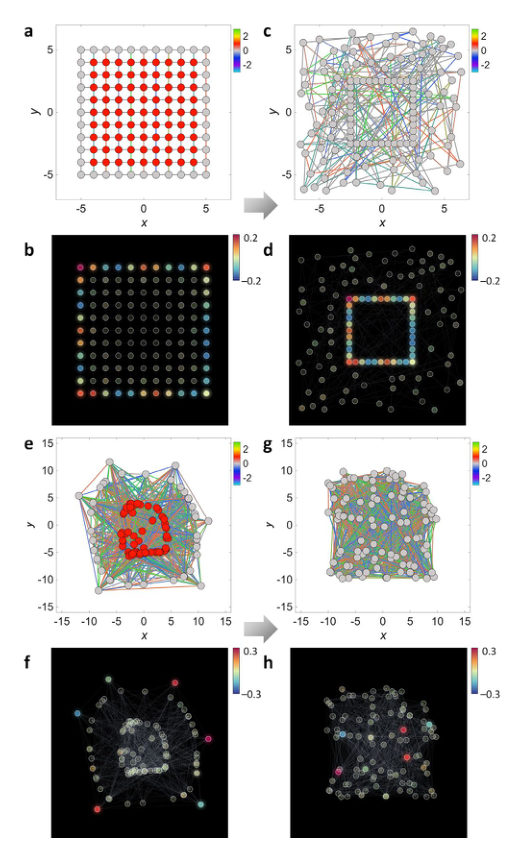
<figcaption class="paper-figure-caption"><b>Fig 1.</b> Fig. 1. Conventional diagnostics cannot uniquely probe the topological phases of abstract</figcaption>
</figure>
<figure class="paper-figure-card">
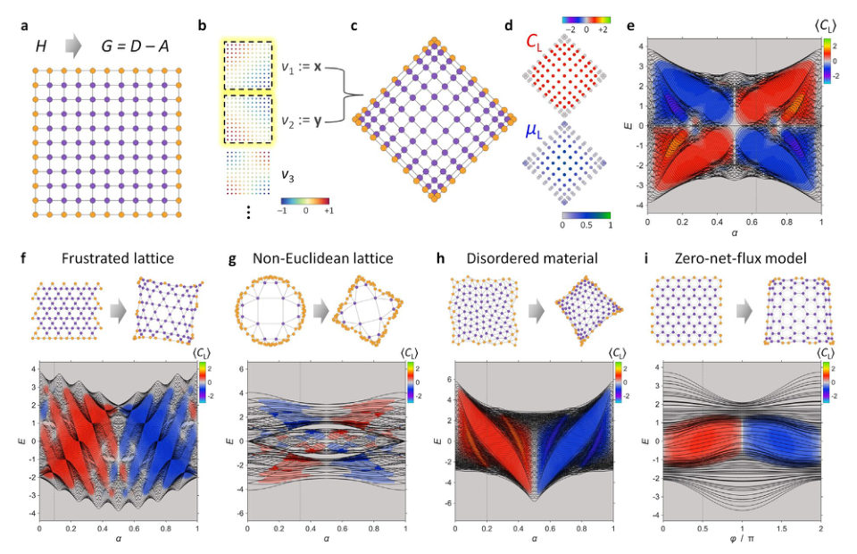
<figcaption class="paper-figure-caption"><b>Fig 2.</b> Fig. 2. Topological phases beyond spatial embedding. a, The graph Laplacian G is built from</figcaption>
</figure>
<figure class="paper-figure-card">
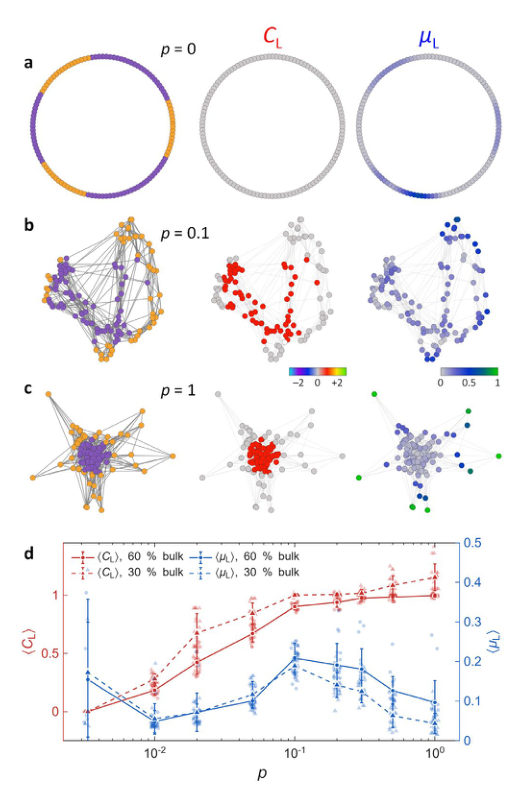
<figcaption class="paper-figure-caption"><b>Fig 3.</b> Fig. 3. Topological phases of Watts-Strogatz networks. a-c, Embedding (left; bulk, purple; edge,</figcaption>
</figure>
</div>

<p><strong>Summary.</strong> This paper develops a novel, embedding-independent framework to characterize topological phases of matter by deriving spatial coordinates directly from the graph Laplacian eigenstates of the system's Hamiltonian. By applying this method to complex networks, the authors show that topology can be robustly defined even when the physical embedding is arbitrary. This fundamentally shifts the focus of topological physics from geometry to the intrinsic structure of the Hamiltonian itself.</p>
<p><strong>Why it may be interesting.</strong> This work provides a powerful, abstract mathematical tool for defining topological invariants based purely on connectivity and Hamiltonian structure, which is crucial for designing quantum systems on arbitrary or synthetic lattices.</p>
<details>
<summary>Detailed structure</summary>
<p><strong>Main problem.</strong> Conventional topological phase characterizations depend on the physical spatial embedding, which prevents a unique characterization on abstract platforms defined only by their Hamiltonian.</p>
<p><strong>Main result.</strong> The authors propose and demonstrate a Hamiltonian-derived embedding that successfully characterizes topological phases on complex networks, decoupling topology from prescribed physical geometry.</p>
<p><strong>Method.</strong> They construct a spatial embedding using the lowest-order nontrivial eigenstates of the graph Laplacian, which groups sites based on strong coupling within the Hamiltonian structure.</p>
<p><strong>Model / system.</strong> The work applies to topological phases in various lattices (Hofstadter, kagome, etc.) and extends the framework to complex networks, such as Watts-Strogatz small-world graphs.</p>
<p><strong>Key observables.</strong> Local Chern index ($C_L$), local gap ($\mu_L$), and bulk-averaged topological indices ($\langle C_L 
angle$).</p>
<p><strong>Important parameters / regimes.</strong> Rewiring probability ($p$) in small-world networks, magnetic flux ($\alpha$), and energy ($E$).</p>
<p><strong>Assumptions / limitations.</strong> The Hamiltonian-derived embedding captures phases inherited from local Hamiltonians but may fail to reconstruct all possible topological phases in a complex network.</p>
<p><strong>Figures summary.</strong> Figures compare topological diagnostics (like $C_L$) between original and derived embeddings for various lattices, and show the successful recovery of topological features in small-world networks at intermediate rewiring probabilities.</p>
<p><strong>Paper structure.</strong> The paper first establishes the limitation of embedding-dependent diagnostics, then introduces the Hamiltonian-derived embedding via Laplacian eigenstates, demonstrating its success on canonical lattices, and finally testing its robustness and limitations on complex, engineered networks.</p>
</details>
<details>
<summary>Abstract</summary>
<p>Although Hamiltonians govern wave-matter interactions, conventional characterizations of topological phases of matter require more than the Hamiltonian alone, relying on global invariants defined on closed reciprocal-space manifolds or local commutation relations with position operators. This spatial dependence precludes a unique characterization of topological phases on an abstract platform, whose Hamiltonian can be defined independently of its spatial embedding. Here we establish a framework for characterizing universal topological phases, grounded in the invariance of topological features under arbitrary Hamiltonian-preserving deformations. We construct a Hamiltonian-based spatial embedding that groups a system's constituents according to their connectivity. This embedding, which reproduces the results of conventional topological diagnostics in established systems, enables a coherent extension of topological phases to complex networks using the Hamiltonian alone, further highlighting exceptional robustness in small-world networks. Our results reshape the conceptual foundations of topological physics by decoupling topological characterization from prescribed physical platforms.</p>
</details>
<p><sub><a href="#top">↑ back to top</a></sub></p>

<p><a id="paper-2610.29278"></a></p>
<h3 id="chirality-klein-duality-and-the-stability-of-kitaev-spin-liquids-on-the-star-lattice"><a href="http://arxiv.org/abs/2610.29278v1">Chirality, Klein duality, and the stability of Kitaev spin liquids on the star lattice</a></h3>
<p><strong>Authors:</strong> Harsh Raj, Yasir Iqbal<br>
<strong>Type:</strong> theory · <strong>Category:</strong> strongly correlated electrons · <strong>PDF:</strong> <a href="https://arxiv.org/pdf/2610.29278v1">https://arxiv.org/pdf/2610.29278v1</a><br>
<strong>Analysis basis:</strong> full PDF text, analyzed in chunks
<strong>Topic relevance:</strong> <code>analog quantum simulation</code> <strong>3/5</strong></p>
<div class="figure-strip-hint">↔ Scroll figures horizontally</div>
<div class="paper-figures-scroll">
<figure class="paper-figure-card">
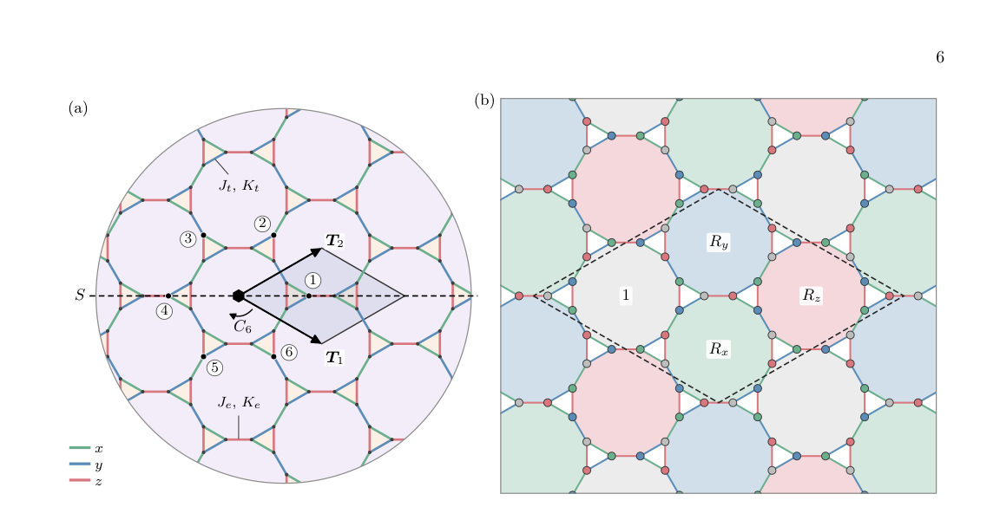
<figcaption class="paper-figure-caption"><b>Fig 1.</b> FIG. 1. (a) Star lattice with the Kitaev coloring of Ref. [19]: every site has one x, one y, and one z bond, and every inter-triangle bond carries the color of the opposite edge of each of its triangles. Triangle edges carry the couplings Jt, Kt and inter-triangle bonds Je, Ke. The shaded unit cell is spanned by T1 and T2 from the sixfold rotation center C6 at the dodecagon center; the circled numbers are the sublattice labels µ = 1, . . . , 6 of the reference cell, and the dashed line is the mirror S : y →−y. (b) The four-unit-cell Klein pattern of the duality of Sec. VI: all spins of the cell (x, y) are rotated by 1, Rx, Ry, or Rz for (x, y) mod 2 = (0, 0), (1, 0), (0, 1), or (1, 1). The...</figcaption>
</figure>
<figure class="paper-figure-card">
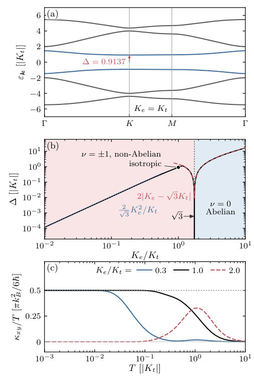
<figcaption class="paper-figure-caption"><b>Fig 2.</b> FIG. 2. Kitaev limit for Kt, Ke &gt; 0, in units of |Kt|. (a) Majorana bands at Ke = Kt along Γ–K–M–Γ in the ground flux sector (triangle flux +π/2, dodecagon flux π), with the gap 0.9137 at K; the labels of the momenta depend on the gauge. (b) Single-Majorana gap as a function of Ke/Kt, with the asymptote (2/ √</figcaption>
</figure>
<figure class="paper-figure-card">
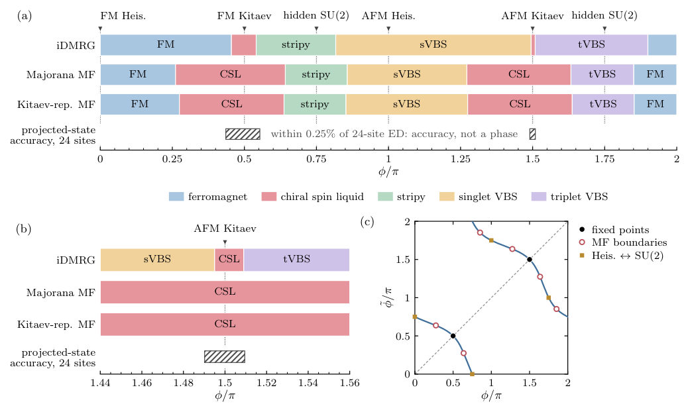
<figcaption class="paper-figure-caption"><b>Fig 3.</b> FIG. 3. (a) Phases of the KH model along the circle of Eq. (3): iDMRG and Majorana mean field of Ref. [19] (boundaries from Figs. 7 and 8 there, with an uncertainty of ±0.005π), the self-consistent mean field (MF) in the Kitaev representation of this work (Kitaev-rep. MF), and, hatched in the bottom row, the intervals in which the Gutzwiller-projected nearest-neighbor state with alternating triangle fluxes (class-D PSG ZC110110, the lowest flux sector of the Kitaev model on the 24-site torus; Sec. VIII) reproduces the 24-site ED energy to 0.25%, |J/K| ≤0.093 (FM) and |J/K| ≤0.0152 (AFM). The hatched intervals measure the accuracy of a variational state on 24 sites at an arbitrary threshold;...</figcaption>
</figure>
<figure class="paper-figure-card">

<figcaption class="paper-figure-caption"><b>Fig 4.</b> FIG. 4. Relative deviation of the energy of the Gutzwiller- projected nearest-neighbor state with alternating triangle fluxes (class-D PSG ZC110110, the lowest flux sector of the Kitaev model on this cluster) from the exact ground-state en- ergy on the 24-site 2 × 2 torus, as a function of J/K near the FM (ϕ ≈π/2) and AFM (ϕ ≈3π/2) Kitaev points; at J = 0 the projected state is exact. The deviation is positive (variational) and even in J/K, since ±J/K are dual angles. The dashed line marks the 0.25% threshold of the accuracy intervals hatched in Fig. 3.</figcaption>
</figure>
<figure class="paper-figure-card">
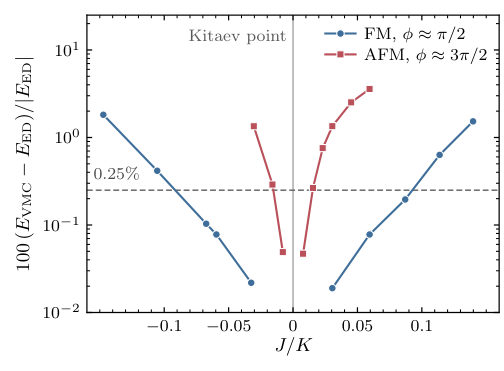
<figcaption class="paper-figure-caption"><b>Fig 5.</b> Figure 4 shows the relative deviation of the opti- mized projected energy from the exact one on 24 sites.</figcaption>
</figure>
</div>

<p><strong>Summary.</strong> This theoretical work analyzes Kitaev spin liquids on the star lattice, demonstrating that the system must spontaneously break time-reversal symmetry to realize its chiral state. Using advanced group theory (PSGs) and perturbation theory, the authors map out the stability regimes and show how duality transformations constrain the possible quantum phases.</p>
<p><strong>Why it may be interesting.</strong> The deep connection between lattice geometry (star lattice), topological order (Kitaev liquids), and fundamental symmetries (chirality, time-reversal) provides a rich theoretical playground for understanding emergent quantum phenomena relevant to strongly correlated materials.</p>
<details>
<summary>Detailed structure</summary>
<p><strong>Main problem.</strong> The paper investigates the chirality, Klein duality, and stability of Kitaev spin liquids on the star lattice.</p>
<p><strong>Main result.</strong> The analysis shows that the chiral nature of the spin liquid is robust, requiring time-reversal symmetry breaking, and that the system's physics is governed by the interplay between symmetry constraints and duality transformations.</p>
<p><strong>Method.</strong> The study employs advanced theoretical tools including Density-Matrix Renormalization Group (DMRG), Projective Symmetry Groups (PSGs), and exact second-order perturbation theory.</p>
<p><strong>Model / system.</strong> The system is the Kitaev spin liquid model on the star lattice, which is a periodic tricoordinated lattice derived from the honeycomb lattice. The Hamiltonian involves Kitaev and Heisenberg couplings, leading to both Abelian and non-Abelian topological phases.</p>
<p><strong>Key observables.</strong> Chirality (spontaneous time-reversal symmetry breaking), topological order (Abelian vs. non-Abelian), and the energy response to Heisenberg coupling via vison creation.</p>
<p><strong>Important parameters / regimes.</strong> The ratio of Kitaev to Heisenberg couplings, and the specific values of the couplings ($K, J_t, J_e$).</p>
<p><strong>Assumptions / limitations.</strong> The analysis relies on the PSG framework, which classifies $Z_2$ PSGs, and the use of mean-field ansatzes, though perturbation theory helps locate asymmetries beyond these approximations.</p>
<p><strong>Figures summary.</strong> The notes reference tables detailing parameters for various lattice configurations (ZCxxxxxx) and summarize the counting of U(1) PSGs across different symmetry sectors.</p>
<p><strong>Paper structure.</strong> The paper progresses from defining the physical model and the role of chirality, to developing the PSG framework for symmetry constraints, analyzing the implications of Klein duality, and finally using perturbation theory to locate coupling asymmetries.</p>
</details>
<details>
<summary>Abstract</summary>
<p>The star lattice hosts the Yao-Kivelson chiral spin liquid, an exactly solvable Kitaev spin liquid that breaks time reversal spontaneously and is non-Abelian or Abelian depending on the ratio of its two couplings. A density-matrix renormalization group study found that an added Heisenberg exchange leaves it a wide stability window for ferromagnetic but only a narrow one for antiferromagnetic Kitaev coupling. Using projective symmetry groups (PSGs) of fermionic partons, we show that the chirality is not a peculiarity of the solvable point: whenever the $π$ spin rotations act on the partons as in the exact solution (spin-gauge locking), a time-reversal-symmetric mean-field state has no amplitude on the triangles, at any range, so a Kitaev-type spin liquid on this lattice must break time reversal. The Abelian and non-Abelian liquids of both signs share a single chiral PSG, within which their transition is a band inversion. The Klein duality, which reverses the Heisenberg coupling, permutes the PSGs and leaves exactly the locked ones unchanged; a $Z_2$ spin-liquid phase mapped onto itself is therefore locked and, if it spans a connected range of couplings, contains a Kitaev point. Unprojected mean-field theory in Kitaev's Majorana representation treats both signs alike. Exact second-order perturbation theory about the Kitaev points locates the asymmetry: the triangles respond identically for both signs, whereas on the bonds between triangles the two off-diagonal Heisenberg terms create the same four visons and interfere constructively for antiferromagnetic and almost destructively for ferromagnetic coupling, admixing a low-energy four-vison state $82$ times more strongly on the antiferromagnetic side. The PSG results rest on a classification of $352$ $Z_2$ PSGs with spin-orbit-coupled amplitudes, which also identifies the fermionic partners of the known Schwinger-boson spin liquids.</p>
</details>
<p><sub><a href="#top">↑ back to top</a></sub></p>

<p><a id="paper-2610.29146"></a></p>
<h3 id="evaluation-of-the-quantum-fisher-information-for-large-systems-via-an-ancilla"><a href="http://arxiv.org/abs/2610.29146v1">Evaluation of the quantum Fisher information for large systems via an ancilla</a></h3>
<p><strong>Authors:</strong> Qi Liu, Xin-Yu Hao, Jing Liu<br>
<strong>Type:</strong> theory · <strong>Category:</strong> quantum information and computing · <strong>PDF:</strong> <a href="https://arxiv.org/pdf/2610.29146v1">https://arxiv.org/pdf/2610.29146v1</a><br>
<strong>Analysis basis:</strong> full PDF text, analyzed in chunks
<strong>Topic relevance:</strong> <code>quantum measurements</code> <strong>3/5</strong></p>
<div class="figure-strip-hint">↔ Scroll figures horizontally</div>
<div class="paper-figures-scroll">
<figure class="paper-figure-card">
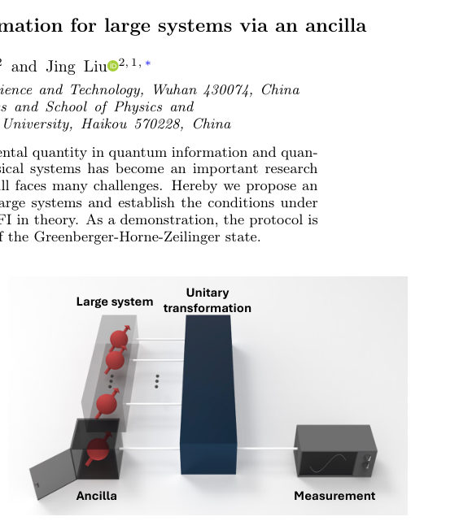
<figcaption class="paper-figure-caption"><b>Fig 1.</b> Figure 1. Demonstration of the evaluation protocol with an ancilla. Both the large system and ancilla are transformed by a unitary transformation, then the ancilla is measured to evaluate the QFI of the large system.</figcaption>
</figure>
<figure class="paper-figure-card">
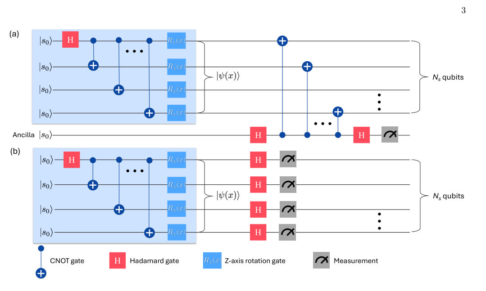
<figcaption class="paper-figure-caption"><b>Fig 2.</b> Figure 2. The circuit schematic to evaluate the QFI for the GHZ state. (a) The measurement via a qubit ancilla; (b) The direct measurement on the large system. The light-blue regions represent the preparation processes of the GHZ state. The measurement icon refers to the projective measurement {|s0⟩⟨s0| , |s1⟩⟨s1|}⊗Ns.</figcaption>
</figure>
<figure class="paper-figure-card">
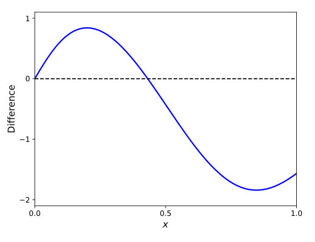
<figcaption class="paper-figure-caption"><b>Fig 3.</b> Figure 3. The difference between Pm i=1</figcaption>
</figure>
</div>

<p><strong>Summary.</strong> This paper introduces an ancilla-based protocol to overcome the challenges of calculating the Quantum Fisher Information (QFI) in large quantum systems. By mapping the QFI onto a smaller ancilla, the authors establish theoretical conditions for achieving optimal estimation. The protocol is successfully demonstrated on the GHZ state, confirming its utility for quantum metrology.</p>
<p><strong>Why it may be interesting.</strong> This work provides a concrete, theoretically rigorous framework for estimating fundamental quantum limits (QFI) in complex, large-scale quantum systems, which is crucial for quantum metrology applications.</p>
<details>
<summary>Detailed structure</summary>
<p><strong>Main problem.</strong> The primary challenge addressed is the theoretical and practical difficulty of evaluating the Quantum Fisher Information (QFI) for large quantum systems.</p>
<p><strong>Main result.</strong> The authors propose an ancilla-based protocol that can theoretically achieve the optimal QFI evaluation for certain systems, demonstrating its success on the GHZ state.</p>
<p><strong>Method.</strong> The core method involves mapping the QFI evaluation of the large system onto a low-dimensional ancilla using unitary transformations and subsequent measurements.</p>
<p><strong>Model / system.</strong> The analysis is general for quantum systems parameterized by $x$, but the protocol is demonstrated using the Greenberger-Horne-Zeilinger (GHZ) state in quantum circuits.</p>
<p><strong>Key observables.</strong> Quantum Fisher Information (QFI), Classical Fisher Information (CFI), and Sub-QFI ($F_{	ext{sub}}$).</p>
<p><strong>Important parameters / regimes.</strong> The relationship between the number of distinct values of $\partial_x \ln p_i$ ($m$) and the ancilla dimension ($n$) is critical for protocol feasibility.</p>
<p><strong>Assumptions / limitations.</strong> The protocol assumes that the QFI can be 'well transferred' to the ancilla, and its optimality depends on the relationship between $m$ and $n$.</p>
<p><strong>Figures summary.</strong> Figure 1 illustrates the general ancilla-based evaluation protocol flow. Figure 2 compares the ancilla-assisted QFI evaluation versus direct measurement for the GHZ state circuit.</p>
<p><strong>Paper structure.</strong> The paper first establishes theoretical bounds and conditions (Theorems 1, 2, 3) for QFI evaluation. It then derives the correct upper bound for QFI in mixed states, compares sub-QFI to QFI, and finally applies the optimal protocol to the GHZ state example.</p>
</details>
<details>
<summary>Abstract</summary>
<p>Quantum Fisher information (QFI) is a fundamental quantity in quantum information and quantum mechanics, and evaluating it in various physical systems has become an important research topic. However, its evaluation in large systems still faces many challenges. Hereby we propose an ancilla-based protocol for evaluating the QFI of large systems and establish the conditions under which this protocol can ``perfectly'' evaluate the QFI in theory. As a demonstration, the protocol is applied to quantum circuits to evaluate the QFI of the Greenberger-Horne-Zeilinger state.</p>
</details>
<p><sub><a href="#top">↑ back to top</a></sub></p>

<p><a id="paper-2610.29035"></a></p>
<h3 id="optimization-versus-fair-sampling-in-quantum-annealing-an-exactly-characterized-frustrated-ising-benchmark"><a href="http://arxiv.org/abs/2610.29035v1">Optimization versus fair sampling in quantum annealing: An exactly characterized frustrated Ising benchmark</a></h3>
<p><strong>Authors:</strong> Masaru Hitomi, Masayuki Ohzeki<br>
<strong>Type:</strong> both · <strong>Category:</strong> disordered systems and neural networks · <strong>PDF:</strong> <a href="https://arxiv.org/pdf/2610.29035v1">https://arxiv.org/pdf/2610.29035v1</a><br>
<strong>Analysis basis:</strong> full PDF text, analyzed in chunks
<strong>Topic relevance:</strong> <code>analog quantum simulation</code> <strong>3/5</strong></p>
<div class="figure-strip-hint">↔ Scroll figures horizontally</div>
<div class="paper-figures-scroll">
<figure class="paper-figure-card">
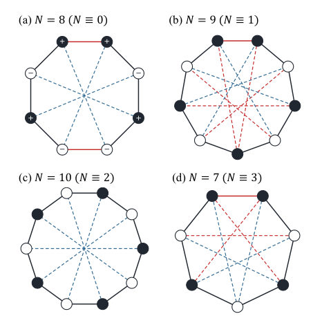
<figcaption class="paper-figure-caption"><b>Fig 1.</b> FIG. 1. Schematic picture of representative ground states for the couplings in Eq. (7). Filled and open circles denote spins +1 and −1. Solid and dashed lines represent nearest- neighbor and maximally separated bonds, respectively. Red marks unsatisfied bonds. (a) N = 8: two antipodal nearest- neighbor defects, with all maximally separated bonds satis- fied. (b),(d) N = 9, 7: one nearest-neighbor defect, with five and three unsatisfied maximally separated bonds, respec- tively. (c) N = 10: a N´eel state satisfying all bonds.</figcaption>
</figure>
<figure class="paper-figure-card">
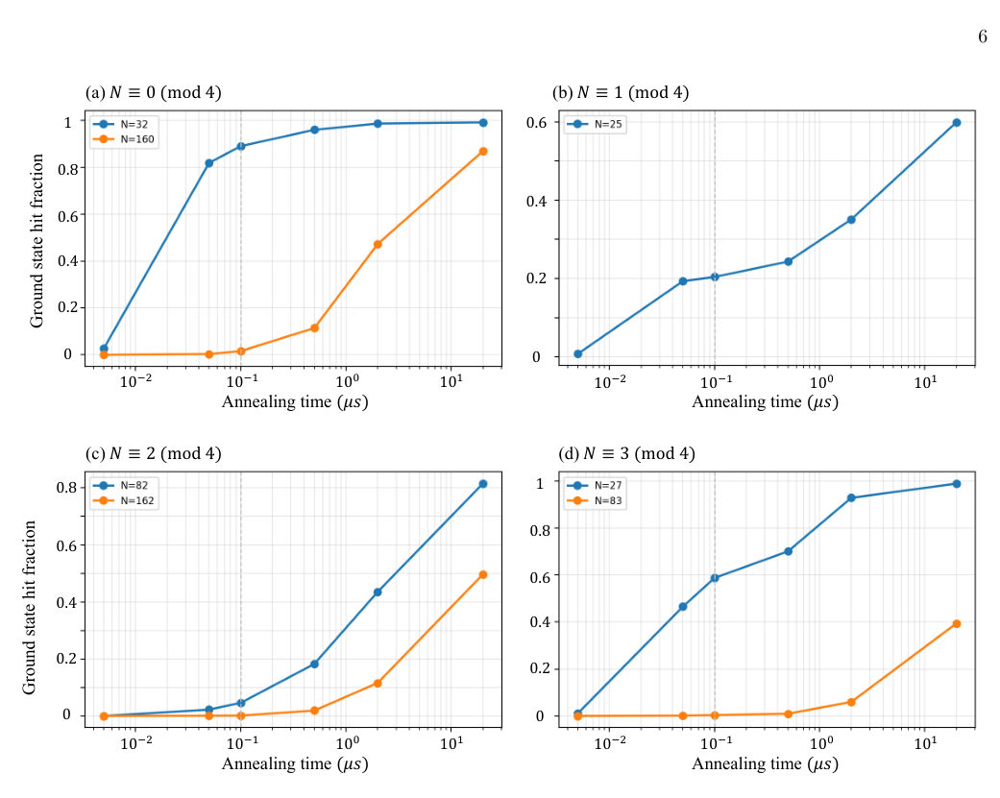
<figcaption class="paper-figure-caption"><b>Fig 2.</b> FIG. 2. Ground-state hit probability PG of the QPU as a function of the annealing time for representative system sizes in the four congruence classes of N modulo four: (a) N ≡0, (b) N ≡1, (c) N ≡2, and (d) N ≡3 (mod 4). The vertical dashed line at 0.1 µs marks the upper end of the fast-anneal range used here; the longer-time points correspond to standard annealing. The larger instances exhibit a pronounced increase in PG with increasing standard annealing time.</figcaption>
</figure>
<figure class="paper-figure-card">
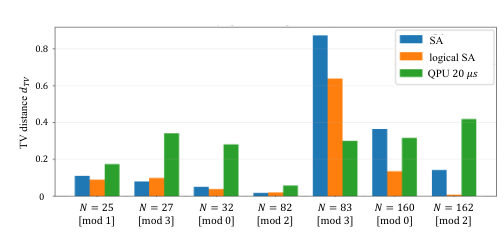
<figcaption class="paper-figure-caption"><b>Fig 3.</b> FIG. 3. State-level total-variation distance dst TV from the uniform distribution over exact ground states for represen- tative instances. “SA” denotes simulated annealing on the embedded physical problem, “logical SA” denotes simulated annealing directly on the logical problem, and the QPU re- sults use a standard 20 µs anneal. A smaller value indicates a distribution closer to uniformity. The comparison shows that a protocol with a larger ground-state hit probability need not sample the degenerate ground-state manifold more uniformly.</figcaption>
</figure>
<figure class="paper-figure-card">
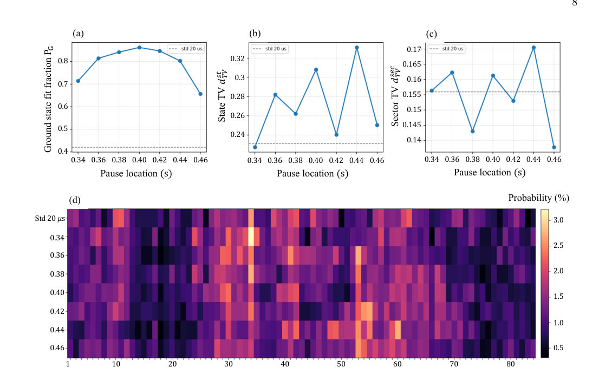
<figcaption class="paper-figure-caption"><b>Fig 4.</b> FIG. 4. Pause-annealing results for N = 83 with a 100 µs pause. (a) Ground-state hit probability PG, (b) state-level total- variation distance dst TV, and (c) sector-level total-variation distance dsec TV as functions of the pause location sp. The horizontal dashed lines denote the corresponding values for the standard 20 µs baseline acquired with the pause data. (d) Conditional probabilities of the 83 defect sectors for the standard anneal and the refined pause locations; each row is normalized over the exact ground-state samples in that data set. The pause produces a pronounced enhancement of PG near sp ≃0.4, while the conditional state and defect-sector distributions remain nonuniform.</figcaption>
</figure>
</div>

<p><strong>Summary.</strong> This paper rigorously benchmarks quantum annealers using a frustrated Ising ring model to separate the concepts of optimization success from fair sampling. By analyzing the ground-state manifold, the authors demonstrate that a high probability of finding the ground state does not imply that the system samples all ground states uniformly. This finding provides a critical diagnostic tool for assessing quantum annealing hardware performance.</p>
<p><strong>Why it may be interesting.</strong> This work provides a rigorous, exactly characterized benchmark for assessing the limitations of quantum annealers, which is crucial for understanding the practical utility of quantum computation in optimization problems.</p>
<details>
<summary>Detailed structure</summary>
<p><strong>Main problem.</strong> The paper distinguishes between two distinct properties of quantum annealers: the ability to reach a degenerate ground-state manifold (optimization success) and the ability to sample that manifold uniformly (fair sampling).</p>
<p><strong>Main result.</strong> Optimization success does not guarantee fair sampling; the processor can hit the ground state frequently while exhibiting significant, measurable bias in the distribution over those states.</p>
<p><strong>Method.</strong> The authors use an exactly characterized frustrated Ising model on a ring structure, comparing quantum annealing results against classical simulated annealing on both embedded and logical problems.</p>
<p><strong>Model / system.</strong> The system is an Ising ring with nearest-neighbor and additional couplings between maximally separated sites, described by a specific Hamiltonian. The ground-state manifold structure is analytically determined based on the ring size N modulo four.</p>
<p><strong>Key observables.</strong> Ground-state hit probability ($P_G$), total-variation distance ($d_{TV}$) from uniformity, and conditional distributions over defect sectors.</p>
<p><strong>Important parameters / regimes.</strong> The size of the ring ($N$), the nature of the couplings (antiferromagnetic), and the annealing schedule (including pauses).</p>
<p><strong>Assumptions / limitations.</strong> The analysis relies on the exact analytical knowledge of the ground-state manifold for the specific Ising ring structure.</p>
<p><strong>Figures summary.</strong> Figure 1 schematically illustrates the ground states and bonds (nearest-neighbor vs. maximally separated) for small N, while other figures compare $P_G$ and sampling bias across different annealing times.</p>
<p><strong>Paper structure.</strong> The paper first establishes the physical model and the two distinct goals (optimization vs. sampling). It then derives the exact ground-state structure analytically based on N mod 4. Finally, it presents numerical results comparing QPU performance to classical methods, demonstrating the decoupling of the two goals.</p>
</details>
<details>
<summary>Abstract</summary>
<p>Reaching a degenerate ground-state manifold and sampling it uniformly are distinct properties of a quantum annealer. We quantify this distinction using an Ising ring with additional couplings between maximally separated sites. For antiferromagnetic benchmark couplings and $N \geq 5$, we derive the exact ground-state energy, degeneracy, and defect structure for each congruence class of $N$ modulo four. This classification separates ground-state hit probability from conditional sampling bias. We embed instances with up to 162 logical spins on a D-Wave Advantage processor using length-two chains and compare its output with simulated annealing on the embedded and logical problems. For a frustrated $N=83$ instance, the processor visits 164 of the 166 exact ground states, yet the conditional distributions over states and defect sectors remain nonuniform. For $N=160$, the processor has a larger ground-state hit probability than logical simulated annealing (0.869 versus 0.519), but also a larger total-variation distance from uniformity (0.317 versus 0.136). A pause during the anneal raises the ground-state hit probability from 0.42 to 0.86 without restoring uniform sampling. These results identify a relaxation window and demonstrate that optimization success and sampling quality need not improve together, providing an exactly characterized benchmark for open-system quantum annealing.</p>
</details>
<p><sub><a href="#top">↑ back to top</a></sub></p>

<p><a id="paper-2610.29450"></a></p>
<h3 id="quantum-belief-characterization-a-multi-shot-notion-of-equivalence"><a href="http://arxiv.org/abs/2610.29450v1">Quantum Belief Characterization: A Multi-Shot Notion of Equivalence</a></h3>
<p><strong>Authors:</strong> Mingxuan Liu, Pavel Sekatski, Valerio Scarani<br>
<strong>Type:</strong> theory · <strong>Category:</strong> other · <strong>PDF:</strong> <a href="https://arxiv.org/pdf/2610.29450v1">https://arxiv.org/pdf/2610.29450v1</a><br>
<strong>Analysis basis:</strong> full PDF text, analyzed in chunks
<strong>Topic relevance:</strong> <code>quantum measurements</code> <strong>3/5</strong></p>
<div class="figure-strip-hint">↔ Scroll figures horizontally</div>
<div class="paper-figures-scroll">
<figure class="paper-figure-card">

<figcaption class="paper-figure-caption"><b>Fig 1.</b> FIG. 1. Multi-shot equivalence of quantum beliefs. Starting from two extended beliefs β and γ on SR, the same admissible update sequence is applied. The beliefs are n-shot equivalent, β ∼n γ, when the final posterior marginals on S agree for any such sequence of length n.</figcaption>
</figure>
<figure class="paper-figure-card">
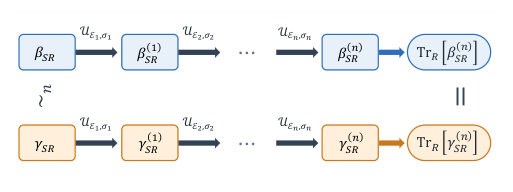
<figcaption class="paper-figure-caption"><b>Fig 2.</b> Figure 1 illustrates this definition: the relation β ∼n γ holds when applying the same admissible update sequence to the two extended beliefs always yields the same final posterior marginal on system S. The notion is strictly stronger than single-shot equivalence because it requires the equality of the marginals of final belief after arbitrary sequences of updates rather than after only one.</figcaption>
</figure>
<figure class="paper-figure-card">
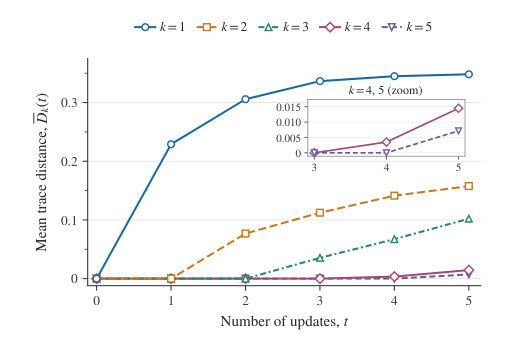
<figcaption class="paper-figure-caption"><b>Fig 3.</b> FIG. 2. Mean trace distance between design posterior and Haar posterior. The plot shows the arithmetic means of trace distance, i.e., Dk(t) in Eq. (58), for k = 1, 2, 3, 4, 5.</figcaption>
</figure>
</div>

<p><strong>Summary.</strong> This paper formalizes 'multi-shot equivalence' for quantum beliefs, which governs how beliefs should behave after multiple sequential updates. It establishes that for a specific class of beliefs, this multi-shot equivalence is mathematically equivalent to matching the $(n+1)$-th moments. This provides a powerful, quantifiable diagnostic tool for assessing the consistency of iterative quantum inference.</p>
<p><strong>Why it may be interesting.</strong> While highly abstract, the rigorous mathematical framework for characterizing belief consistency across multiple measurements is relevant to quantum process tomography and sequential quantum estimation protocols.</p>
<details>
<summary>Detailed structure</summary>
<p><strong>Main problem.</strong> The paper develops a formal, multi-shot notion of equivalence for quantum beliefs, extending the single-shot concept by analyzing iterative updates.</p>
<p><strong>Main result.</strong> For candidate-state ensemble beliefs, multi-shot equivalence is shown to be equivalent to the equality of the $(n+1)$-th moments of the underlying belief structures.</p>
<p><strong>Method.</strong> The analysis employs the quantum de Finetti representation and analyzes the consistency of iterative updates using moment matching and functional analysis techniques.</p>
<p><strong>Model / system.</strong> The system involves quantum beliefs, represented by extended density operators on a system of interest ($S$) and a hidden reference system ($R$). The process models sequential, multi-shot updates based on quantum measurements.</p>
<p><strong>Key observables.</strong> The final posterior marginal on the system $S$ after $n$ updates, and the $(n+1)$-th moments of the belief structure.</p>
<p><strong>Important parameters / regimes.</strong> The number of shots, $n$, and the structure of the admissible update channels $(E, \sigma)$.</p>
<p><strong>Assumptions / limitations.</strong> The physical interpretation of iterative updating requires assuming a source model (conditionally i.i.d. source) to simplify the equivalence condition.</p>
<p><strong>Figures summary.</strong> Not specified.</p>
<p><strong>Paper structure.</strong> The paper progresses from defining single-shot quantum belief equivalence to formulating the multi-shot update process. It then uses the quantum de Finetti representation to restrict the problem to candidate-state ensembles, culminating in the moment-matching criterion for equivalence.</p>
</details>
<details>
<summary>Abstract</summary>
<p>A recent formulation of quantum belief showed that quantum retrodiction depends not only on the reduced density operator of the system of interest, but also on correlations with a hidden reference system, which leads to the notion of quantum belief equivalence. In this paper we formulate a multi-shot problem, where the extended posterior obtained after one update is used again as the prior for the next update. We first define a formal notion of $n$-shot equivalence and derive several propositions for arbitrary extended beliefs. We then argue that the agent must also specify why the data obtained in different rounds concern the same underlying object. Through the quantum de Finetti representation, this narrows the one-copy belief to a special class: candidate-state ensemble belief. In that sector, we show that two beliefs are $n$-shot equivalent if and only if their $(n+1)$-th moments are equal. We also give a physical interpretation of this moment condition and illustrate it through the equivalence between Haar priors and projective-design priors at bounded update depth.</p>
</details>
<p><sub><a href="#top">↑ back to top</a></sub></p>

<p><a id="paper-2610.29170"></a></p>
<h3 id="turning-quantum-compiler-configuration-selection-upside-down-a-top-down-paradigm"><a href="http://arxiv.org/abs/2610.29170v1">Turning Quantum Compiler Configuration Selection Upside Down: A Top-Down Paradigm</a></h3>
<p><strong>Authors:</strong> Ming Zhong, Xiangyu Ren, Kangyu Zheng, Zhi Zeng, Shenggen Zheng, Shaohua Li, Zhiding Liang<br>
<strong>Type:</strong> both · <strong>Category:</strong> quantum information and computing · <strong>PDF:</strong> <a href="https://arxiv.org/pdf/2610.29170v1">https://arxiv.org/pdf/2610.29170v1</a><br>
<strong>Analysis basis:</strong> full PDF text, analyzed in chunks
<strong>Topic relevance:</strong> <code>QC/QI experiment</code> <strong>3/5</strong></p>
<div class="figure-strip-hint">↔ Scroll figures horizontally</div>
<div class="paper-figures-scroll">
<figure class="paper-figure-card">
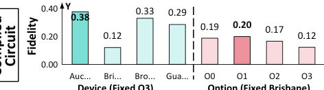
<figcaption class="paper-figure-caption"><b>Fig 1.</b> Figure 1: Workflow and motivation for quantum compiler configuration selection.</figcaption>
</figure>
<figure class="paper-figure-card">
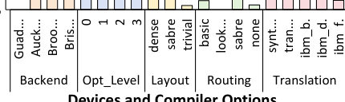
<figcaption class="paper-figure-caption"><b>Fig 2.</b> Figure 2: The optimal configuration distribution.</figcaption>
</figure>
<figure class="paper-figure-card">
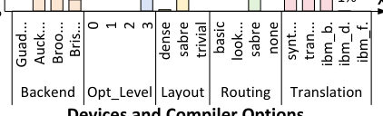
<figcaption class="paper-figure-caption"><b>Fig 3.</b> Figure 3: GPT-5.5-selected configurations.</figcaption>
</figure>
<figure class="paper-figure-card">
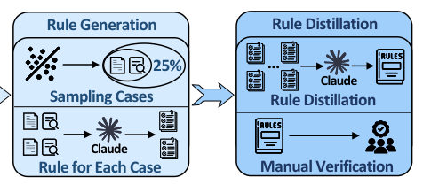
<figcaption class="paper-figure-caption"><b>Fig 4.</b> Figure 5: The quantum compiler configuration selection rule distillation workflow.</figcaption>
</figure>
<figure class="paper-figure-card">
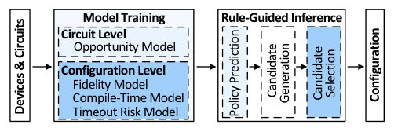
<figcaption class="paper-figure-caption"><b>Fig 5.</b> Figure 6: The workflow of QCompass.</figcaption>
</figure>
</div>

<p><strong>Summary.</strong> This paper tackles the complex problem of optimizing quantum compiler settings by proposing a top-down configuration selection paradigm. Instead of iteratively searching, the authors build a comprehensive benchmark and use LLMs to distill reusable rules governing optimal settings. This results in a fast, high-quality framework that significantly improves the process of mapping abstract circuits to physical hardware.</p>
<p><strong>Why it may be interesting.</strong> This work directly addresses the practical challenges of compiling quantum algorithms for real hardware, which is crucial for any physicist working with quantum simulators or near-term quantum devices.</p>
<details>
<summary>Detailed structure</summary>
<p><strong>Main problem.</strong> The core problem is selecting the optimal quantum compiler configuration, which requires coordinating decisions across hardware targets and compiler settings to maximize circuit execution fidelity.</p>
<p><strong>Main result.</strong> The proposed top-down, rule-guided ML framework (QuTOP) achieves the best balance between high solution quality and fast selection latency compared to existing bottom-up or vanilla LLM approaches.</p>
<p><strong>Method.</strong> The authors developed a top-down paradigm by exhaustively characterizing a benchmark (QuOptBench) and then using LLMs to extract transferable rules that guide a specialized ML predictor.</p>
<p><strong>Model / system.</strong> The system involves quantum circuits compiled for noisy, error-prone quantum hardware, requiring configuration decisions over device backends and compiler options.</p>
<p><strong>Key observables.</strong> Execution Fidelity (e.g., Hellinger fidelity), Estimated Fidelity (F_eff), and selection latency.</p>
<p><strong>Important parameters / regimes.</strong> The configuration space, which is assumed to be manageable enough for offline exhaustive search.</p>
<p><strong>Assumptions / limitations.</strong> The primary assumption is that the configuration space is small enough for offline oracle construction, and that the fidelity can be approximated by an estimated fidelity (F_eff).</p>
<p><strong>Figures summary.</strong> Figure 1 illustrates the comparison between the limited two-stage bottom-up approach and the proposed top-down method. Table 1 summarizes the benchmarks in QuOptBench.</p>
<p><strong>Paper structure.</strong> The paper contrasts the limitations of bottom-up (device-first) selection with the proposed top-down, rule-guided ML approach. It introduces the benchmark, evaluates LLMs, extracts rules, and finally presents the optimized QuTOP framework.</p>
</details>
<details>
<summary>Abstract</summary>
<p>Selecting an effective quantum compiler configuration requires coordinated decisions over both hardware targets and compiler settings, with the ultimate goal of improving circuit execution fidelity. Existing SOTA approaches typically decompose this problem into two sequential stages: a device is chosen first, after which compiler options are tuned on that device through RL-based search. This bottom-up strategy can be fundamentally limited by its initial device decision, since a poorly matched backend may constrain the best fidelity achievable regardless of how effectively later compiler options are optimized. In contrast to classical compiler tuning, where the search space is often prohibitively large, the configuration space of quantum compilers remains manageable enough to support exhaustive search. Consequently, rather than repeatedly searching from candidate configurations, one can derive reusable configuration knowledge from offline oracle results and apply it directly to new circuits.   In this paper, we introduce a top-down configuration-selection paradigm and build QuOPTBench, an exhaustively searched benchmark containing oracle configurations for 268 quantum circuits. We first study whether LLMs can directly infer suitable configurations and evaluate ten representative LLMs. The results reveal that vanilla LLMs remain far from the oracle. We then employ an LLM to extract transferable rules from sampled circuits governing configuration selection. Using these rules together with predictors trained on the enumerated configuration data of the sampled circuits, we design QuTOP, a rule-guided ML framework that performs fast configuration selection without iterative online search. Across our evaluation, the distilled rules consistently strengthen LLM-based selection, while QuTOP provides the strongest overall balance between solution quality and selection latency among the baselines.</p>
</details>
<p><sub><a href="#top">↑ back to top</a></sub></p>

<p><a id="paper-2610.29404"></a></p>
<h3 id="bounds-on-attainable-rate-modulation-in-fermis-golden-rule"><a href="http://arxiv.org/abs/2610.29404v1">Bounds on Attainable Rate Modulation in Fermi's Golden Rule</a></h3>
<p><strong>Authors:</strong> Kaisei Ohata, Jun-Yu Dong, Yasutaka Kitahama, Akihito Ishizaki, Keisuke Goda<br>
<strong>Type:</strong> theory · <strong>Category:</strong> other · <strong>PDF:</strong> <a href="https://arxiv.org/pdf/2610.29404v1">https://arxiv.org/pdf/2610.29404v1</a><br>
<strong>Analysis basis:</strong> full PDF text, analyzed in chunks
<strong>Topic relevance:</strong> <code>Tavis-Cummings &amp; cavity-many-emitter</code> <strong>2/5</strong> · <code>Keldysh / 2PI / non-Gaussian methods</code> <strong>1/5</strong> · <code>analog quantum simulation</code> <strong>1/5</strong> · <code>correlated / nonlocal dissipation</code> <strong>1/5</strong> · <code>driven-dissipative phase transition</code> <strong>1/5</strong> · <code>methods for driven-dissipative</code> <strong>1/5</strong> · <code>quantum measurements</code> <strong>1/5</strong></p>
<div class="figure-strip-hint">↔ Scroll figures horizontally</div>
<div class="paper-figures-scroll">
<figure class="paper-figure-card">
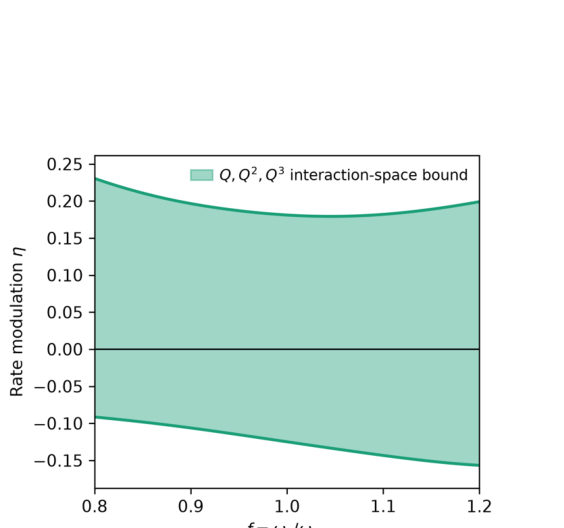
<figcaption class="paper-figure-caption"><b>Fig 1.</b> FIG. 1. Bounds on cavity-induced rate modulation within the 𝑄, 𝑄!, 𝑄&quot; interaction space. The lower and upper curves show the minimum and maximum relative rate modulations 𝜂 obtained from the generalized eigenvalue problem as a function of the normalized cavity frequency 𝑓= 𝜔#/𝜔$%. The shaded region between the bounds represents the full range of rate modulations accessible within the interaction space at each cavity frequency. Positive and negative values denote enhancement and suppression, respectively.</figcaption>
</figure>
<figure class="paper-figure-card">
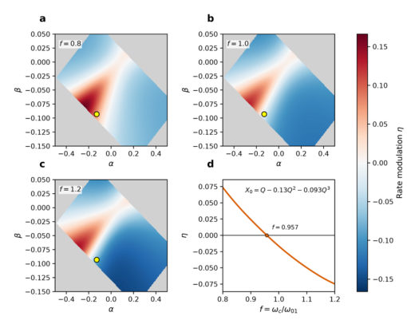
<figcaption class="paper-figure-caption"><b>Fig 2.</b> FIG. 2. Dependence of rate modulation on interaction and cavity detuning. (a)–(c) Relative rate modulation 𝜂(𝛼, 𝛽; 𝑓) for 𝑋&amp;&#x27; = 𝑄+ 𝛼𝑄! + 𝛽𝑄&quot; at 𝑓= 0.8,1.0, and 1.2, respectively. Red and blue indicate enhancement and suppression, respectively, while white indicates values near cancellation (𝜂≈0). Gray regions correspond to interactions excluded by the criterion 𝑅( &lt; 2. The yellow marker denotes (𝛼, 𝛽) = (−0.13,−0.093). (d) Detuning dependence of the fixed interaction marked in (a)–(c), 𝑋$ = 𝑄− 0.13𝑄! −0.093𝑄&quot;. The horizontal line denotes 𝜂= 0, which 𝑋$ crosses at 𝑓= 0.957 as its response changes continuously from enhancement to suppression.</figcaption>
</figure>
</div>

<p><strong>Summary.</strong> This paper develops a theoretical framework to determine the full range of possible rate modulations for quantum transitions governed by Fermi's Golden Rule. By treating the rate as a quadratic form of the interaction, the authors derive rigorous upper and lower bounds on rate changes. This method is demonstrated using a cavity-coupled molecular vibration, showing that rate enhancement and suppression can be continuously controlled by tuning system parameters.</p>
<p><strong>Why it may be interesting.</strong> This work directly addresses rate control in open quantum systems, which is fundamental to quantum optics and molecular physics. Determining the <em>range</em> of possible couplings is a powerful generalization beyond standard perturbation theory calculations.</p>
<details>
<summary>Detailed structure</summary>
<p><strong>Main problem.</strong> The central objective is to determine the full range of achievable rate responses (enhancement or suppression) for quantum transitions governed by Fermi's Golden Rule, rather than just calculating the rate for a pre-specified interaction.</p>
<p><strong>Main result.</strong> The authors derived rigorous bounds on rate modulation by treating the rate as a quadratic form of the interaction coefficients, demonstrating that both enhancement and suppression are continuously accessible by tuning system parameters like cavity detuning.</p>
<p><strong>Method.</strong> The rate is formulated as a quadratic form of the interaction coefficients, allowing the use of generalized Rayleigh quotients to derive upper and lower bounds on the relative rate modulation.</p>
<p><strong>Model / system.</strong> The study models energy transfer from an external donor (Gaussian spectrum) to an anharmonic molecular vibration coupled to an optical cavity. The system is analyzed using Hamiltonians for the coupled and uncoupled reference states.</p>
<p><strong>Key observables.</strong> Relative rate modulation ($\eta$), which quantifies the enhancement or suppression of the transition rate.</p>
<p><strong>Important parameters / regimes.</strong> Cavity detuning ($f$), interaction coefficients $(\alpha, eta)$, and the spectral properties of the donor and transition lines.</p>
<p><strong>Assumptions / limitations.</strong> The analysis relies on expanding the physical quantity governing transfer in a low-order operator basis $\{Q, Q^\dagger, Q^=\}$ and treating the rate as a quadratic form.</p>
<p><strong>Figures summary.</strong> Figures illustrate the derived bounds (min/max $\eta$) on rate modulation versus detuning, and show how a fixed interaction can continuously switch its response (sign change) by varying the cavity detuning.</p>
<p><strong>Paper structure.</strong> The paper introduces the problem of rate control, formulates the rate as a quadratic function of interaction coefficients, derives the bounds using the generalized Rayleigh quotient, and applies this framework to the molecular-cavity energy transfer system.</p>
</details>
<details>
<summary>Abstract</summary>
<p>Controlling transition rates is a central objective across quantum optics, condensed-matter physics, and chemical physics, encompassing processes such as spontaneous emission, energy and charge transfer, spin relaxation, and chemical reactions. Although Fermi's golden rule provides a powerful framework for calculating such rates of weakly coupled transitions, conventional calculations require the interaction to be specified in advance; the range of rate responses attainable over a broader interaction space remains unknown. We formulate spectral-overlap golden-rule rates as quadratic forms of the interaction and derive rigorous bounds on rate modulation over a specified interaction space. As an example, application to energy transfer from a donor to a molecular vibration coupled to an optical cavity reveals that enhancement and suppression depend jointly on the interaction and cavity detuning, including continuous reversal of the rate response for a fixed interaction. The same approach may elucidate rate control for other golden-rule processes, including excitation-energy transfer, nonadiabatic electron transfer, nonradiative electronic transitions, vibrational and spin relaxation, and spontaneous emission.</p>
</details>
<p><sub><a href="#top">↑ back to top</a></sub></p>

<p><a id="paper-2610.30098"></a></p>
<h3 id="pure-dephasing-destroys-two-photon-amplitude-not-nonlinear-phase"><a href="http://arxiv.org/abs/2610.30098v1">Pure dephasing destroys two-photon amplitude, not nonlinear phase</a></h3>
<p><strong>Authors:</strong> Matthew Kozma, Stephen Hughes<br>
<strong>Type:</strong> theory · <strong>Category:</strong> quantum information and computing · <strong>PDF:</strong> <a href="https://arxiv.org/pdf/2610.30098v1">https://arxiv.org/pdf/2610.30098v1</a><br>
<strong>Analysis basis:</strong> full PDF text, analyzed in chunks
<strong>Topic relevance:</strong> <code>correlated / nonlocal dissipation</code> <strong>2/5</strong> · <code>Tavis-Cummings &amp; cavity-many-emitter</code> <strong>1/5</strong> · <code>analog quantum simulation</code> <strong>1/5</strong> · <code>driven-dissipative phase transition</code> <strong>1/5</strong> · <code>interference shaping light</code> <strong>1/5</strong> · <code>methods for driven-dissipative</code> <strong>1/5</strong> · <code>quantum measurements</code> <strong>1/5</strong></p>
<div class="figure-strip-hint">↔ Scroll figures horizontally</div>
<div class="paper-figures-scroll">
<figure class="paper-figure-card">
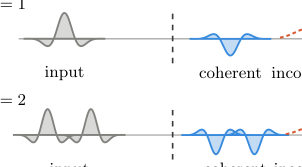
<figcaption class="paper-figure-caption"><b>Fig 1.</b> Figure 1. (a) A two-level emitter chirally coupled to a waveg- uide, subject to pure dephasing at rate γϕ. A Fock pulse is split on a 50:50 beamsplitter into a noise-free reference arm b and a signal arm a containing the emitter; the arms are recombined and coincidences at times t1 and t2 give the in- terferometric correlator G(2) ba that measures the phase. (b),(c) One- and two-photon Fock pulses scatter into a coherent out- put carrying the π shift (drawn inverted) whose amplitude shrinks with γϕ, plus an incoherent remainder that carries the missing weight. Photon number is conserved at every γϕ; coherent amplitude is not.</figcaption>
</figure>
<figure class="paper-figure-card">
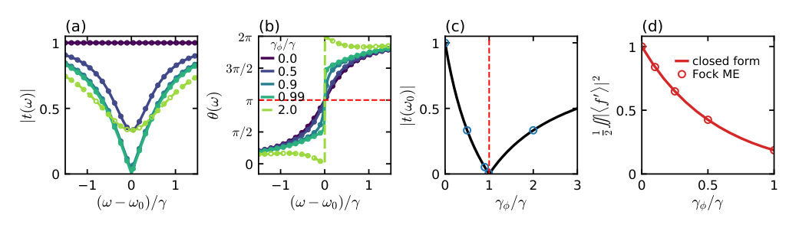
<figcaption class="paper-figure-caption"><b>Fig 2.</b> Figure 2. Collapse of the coherent amplitude: single-photon (a)–(c), two-photon (d). Throughout, lines are the closed-form results and symbols the independent Fock-state master equation (Fock ME) of the End Matter. (a) Transmission amplitude |t(ω)| and (b) phase θ(ω) from Eq. (1), for γϕ/γ = 0, 0.5, 0.9, 0.99, 2, with circles the N = 1 Fock ME (agreement better than 4 × 10−4); the dashed curve is the single above-threshold case γϕ = 2γ, where θ(ω0) has flipped to 0. θ(ω0) = π exactly for every γϕ &lt; γ. The slope at resonance, dθ/dω|ω0 = 2/(γ + γϕ) + 2/(γ −γϕ), diverges at γϕ = γ where |t(ω0)| vanishes—the π is then carried by an amplitude of zero. (c) |t(ω0)| against γϕ. (d) Coherent...</figcaption>
</figure>
<figure class="paper-figure-card">
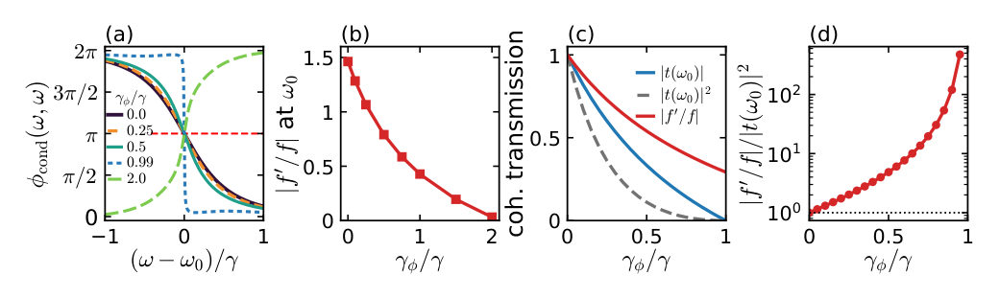
<figcaption class="paper-figure-caption"><b>Fig 3.</b> Figure 3. The conditional phase across frequency and dephasing, and the unequal attenuation of the two channels. (a) Conditional phase along the two-photon diagonal, ϕcond(ω, ω), unwrapped through ±π, for γϕ/γ = 0 (solid), 0.25 (orange dashed), 0.5, 0.99 (dotted) and 2 (dashed, above threshold). At ω0 it is exactly 0 or π for any dephasing rate [38] and equals π at every rate examined; it is antisymmetric about π, so a symmetric resonant pulse returns π on averaging. Its width is set by the linear reference t(ω)2, which vanishes at ω0 as γϕ →γ; the sweep narrows to |γ −γϕ|/2, is undefined at γϕ = γ, and reverses above threshold. (b) Resonant two-photon transmission |f ′/f| at ω1 = ω2 = ω0...</figcaption>
</figure>
<figure class="paper-figure-card">
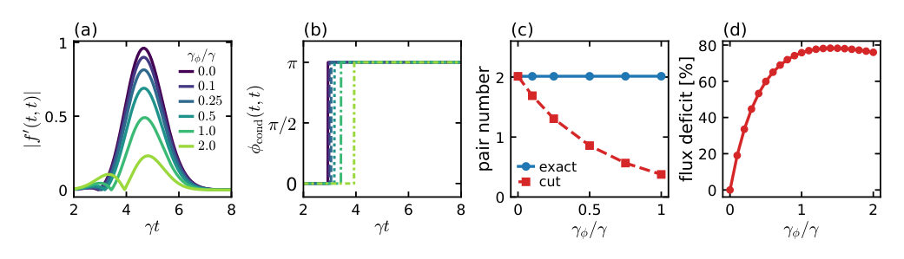
<figcaption class="paper-figure-caption"><b>Fig 4.</b> Figure 4. Panels (a)–(c) are N = 2, panel (d) is N = 1. (a) Equal-time two-photon amplitude |f ′(t, t)|: lines the closed form, Eq. (3), circles the Fock ME. (b) The conditional phase sits at π wherever the amplitude is appreciable, at every γϕ; the curves are offset only by the crossing time, γt = 2.93, 2.98, 3.05, 3.18, 3.43, 3.93 in order of increasing γϕ. The step on the leading edge is a sign change of a real quantity passing through zero, not a rotation. (c) Integrated pair number: the exact value N(N −1) = 2, reproduced as 2.013 at every γϕ, against the vacuum cut RR |E[f ′]|2, which falls short by up to 81%. (d) The single-photon counterpart: the fraction of the transmitted photon...</figcaption>
</figure>
</div>

<p><strong>Summary.</strong> This theoretical study analyzes how pure dephasing affects the two-photon interaction mediated by an emitter coupled to a waveguide. The authors prove that dephasing attenuates the two-photon amplitude rather than simply rotating the nonlinear phase, which is crucial for quantum network fidelity. They also demonstrate that simple factorization methods fail when accounting for dephasing effects.</p>
<p><strong>Why it may be interesting.</strong> This work directly addresses the decoherence limits of quantum light sources used in quantum computation, providing quantitative bounds on how environmental noise degrades non-linear quantum gates.</p>
<details>
<summary>Detailed structure</summary>
<p><strong>Main problem.</strong> The paper investigates whether a $\pi$ conditional phase imprinted on a two-photon pulse by a chirally coupled emitter survives pure dephasing, a critical assumption for quantum photonic neural networks.</p>
<p><strong>Main result.</strong> Pure dephasing destroys the amplitude carrying the nonlinear phase, rather than simply rotating the phase; furthermore, the standard factorization of two-photon correlators fails at first order in the dephasing rate.</p>
<p><strong>Method.</strong> The authors derive the two-photon amplitude in closed form and validate it by comparing results against an independent Fock-state master equation and scattering theory.</p>
<p><strong>Model / system.</strong> The system involves a two-level emitter chirally coupled to a waveguide, analyzed under the influence of pure dephasing ($\gamma_\phi$) alongside radiative decay ($\gamma$).</p>
<p><strong>Key observables.</strong> Two-photon correlator $G^{(2)}_{ba}(t_1, t_2)$, conditional phase $\phi_{	ext{cond}}$, and the coherent two-photon amplitude.</p>
<p><strong>Important parameters / regimes.</strong> The ratio of dephasing to radiative rate ($\gamma_\phi/\gamma$), with analysis performed in the regime $0.1 \le \gamma_\phi/\gamma \le 1$.</p>
<p><strong>Assumptions / limitations.</strong> The analysis assumes the white-noise model for pure dephasing and notes that the standard factorization of correlators fails at first order in $\gamma_\phi$.</p>
<p><strong>Figures summary.</strong> Figures illustrate the collapse of the coherent two-photon amplitude compared to the Fock ME, and show the conditional phase remaining pinned at $\pi$ across various dephasing rates.</p>
<p><strong>Paper structure.</strong> The paper establishes the physical problem, derives the two-photon amplitude in closed form, validates this result against the Fock ME, and then analyzes the failure of standard factorization techniques.</p>
</details>
<details>
<summary>Abstract</summary>
<p>A two-level emitter chirally coupled to a waveguide imprints a $π$ conditional phase on a two-photon pulse, a key component assumed in quantum photonic neural network architectures, but whether it survives the pure dephasing of a solid-state emitter is unknown, since no two-photon scattering treatment includes it. We derive the dephased two-photon amplitude in closed form and validate it against an independent Fock-state master equation. The conditional phase is pinned at exactly $π$ at every dephasing rate examined: dephasing destroys the amplitude carrying the nonlinear phase rather than rotating it. The one- and two-photon channels are not attenuated equally, so dephasing does not simply scale the node down but reweights it between photon-number sectors---an error no phase setting can train away. The standard factorization of two-photon correlators, exact for arbitrary loss, fails at first order in $γ_φ$, discarding $16$--$81\%$ of pairs over $γ_φ/γ=0.1$--$1$.</p>
</details>
<p><sub><a href="#top">↑ back to top</a></sub></p>

<p><a id="paper-2610.29363"></a></p>
<h3 id="adapted-frohlich-pizzo-model-for-horizon-induced-decoherence"><a href="http://arxiv.org/abs/2610.29363v1">Adapted Fröhlich-Pizzo Model for Horizon-Induced Decoherence</a></h3>
<p><strong>Authors:</strong> Bik-Soon Sia<br>
<strong>Type:</strong> theory · <strong>Category:</strong> other · <strong>PDF:</strong> <a href="https://arxiv.org/pdf/2610.29363v1">https://arxiv.org/pdf/2610.29363v1</a><br>
<strong>Analysis basis:</strong> full PDF text, analyzed in chunks
<strong>Topic relevance:</strong> <code>quantum measurements</code> <strong>2/5</strong> · <code>Keldysh / 2PI / non-Gaussian methods</code> <strong>1/5</strong> · <code>correlated / nonlocal dissipation</code> <strong>1/5</strong> · <code>driven-dissipative phase transition</code> <strong>1/5</strong> · <code>methods for driven-dissipative</code> <strong>1/5</strong></p>
<div class="figure-strip-hint">↔ Scroll figures horizontally</div>
<div class="paper-figures-scroll">
<figure class="paper-figure-card">
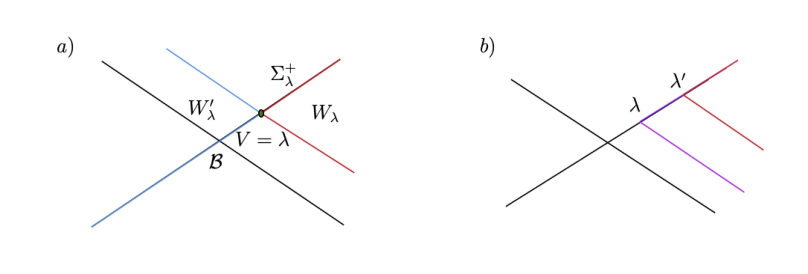
<figcaption class="paper-figure-caption"><b>Fig 1.</b> Figure 1: Schematic illustration of the horizon cuts and their associated wedge regions. (a) The bifurcation surface is denoted by B, and the green dot represents the codimension-two cross-section V = λ of the future horizon. The portion of the horizon to the future of this cut is denoted by Σ+ λ (red). The red and blue lines bound the right wedge Wλ and its causal complement W ′ λ, respectively. (b) Two horizon cuts with λ′ &gt; λ. The corresponding wedge regions are nested, Wλ′ ⊂Wλ, as are the future portions of the horizon, Σ+ λ′ ⊂Σ+ λ .</figcaption>
</figure>
</div>

<p><strong>Summary.</strong> This theoretical paper adapts the Fröhlich-Pizzo model to study decoherence induced by a black hole horizon. By applying the Events-Trees-Histories framework, the authors show that while the asymptotic decoherence matches prior work, residual correlations suggest the underlying dynamics are non-Markovian. This implies the horizon geometry may fundamentally influence the algebraic structure of quantum events.</p>
<p><strong>Why it may be interesting.</strong> The work bridges quantum foundations (ETH) with quantum gravity effects (horizon decoherence), suggesting that fundamental algebraic structures (like those governing quantum events) might be influenced by spacetime geometry.</p>
<details>
<summary>Detailed structure</summary>
<p><strong>Main problem.</strong> The paper investigates the connection between the Events–Trees–Histories (ETH) approach to quantum mechanics and the phenomenon of horizon-induced decoherence near a Killing horizon.</p>
<p><strong>Main result.</strong> The adapted Fröhlich-Pizzo model successfully reproduces the asymptotic decoherence predicted by DSW, but reveals residual vacuum correlations suggesting the underlying dynamics may retain non-Markovian features.</p>
<p><strong>Method.</strong> The authors adapt the Fröhlich-Pizzo model using local algebras of a U(1) chiral current to analyze the reduced state of a charged particle interacting with the horizon degrees of freedom.</p>
<p><strong>Model / system.</strong> The system involves a charged particle near a Killing horizon, modeled using an adaptation of the Fröhlich-Pizzo (FP) model. This framework is analyzed through the lens of the ETH approach, focusing on the structure of quantum events.</p>
<p><strong>Key observables.</strong> Off-diagonal Gram coefficients, residual vacuum correlations, and the structure of the centralizer of the combined system.</p>
<p><strong>Important parameters / regimes.</strong> Large holding time (T), the logarithm of the affine null coordinate along the horizon.</p>
<p><strong>Assumptions / limitations.</strong> The analysis relies on adapting the FP model to handle the continuum nature of the horizon degrees of freedom, contrasting with the original discrete FP model.</p>
<p><strong>Paper structure.</strong> The paper progresses by reviewing the ETH approach, the FP model, and the DSW decoherence mechanism before proposing and analyzing the adapted FP model to address the continuum horizon structure.</p>
</details>
<details>
<summary>Abstract</summary>
<p>The Fröhlich-Pizzo (FP) model is a quantum-mechanical model originally developed to describe the interaction between an atom and the electromagnetic field in the nonrelativistic limit $c\to\infty$. We show that an adaptation of the FP model based on the local algebras of a $U(1)$ chiral current captures essential features of the horizon-induced decoherence mechanism identified by Danielson, Satishchandran, and Wald (DSW) in the limit of large holding time $T$. Our analysis suggests that the effective dynamics of the system undergoing decoherence in the DSW setting retains non-Markovian features. Our approach also offers a glimpse into the possible role of quantum events in the dynamics underlying horizon-induced decoherence.</p>
</details>
<p><sub><a href="#top">↑ back to top</a></sub></p>

<p><a id="paper-2610.30071"></a></p>
<h3 id="inaccessibility-of-the-cosmological-singularity-to-quantum-probes"><a href="http://arxiv.org/abs/2610.30071v1">Inaccessibility of the Cosmological Singularity to Quantum Probes</a></h3>
<p><strong>Authors:</strong> Vishnulal Cheriyodathillathu, Saurya Das, Soumen Basak, Tanmay Patil<br>
<strong>Type:</strong> theory · <strong>Category:</strong> other · <strong>PDF:</strong> <a href="https://arxiv.org/pdf/2610.30071v1">https://arxiv.org/pdf/2610.30071v1</a><br>
<strong>Analysis basis:</strong> full PDF text, analyzed in chunks
<strong>Topic relevance:</strong> <code>Keldysh / 2PI / non-Gaussian methods</code> <strong>2/5</strong> · <code>quantum measurements</code> <strong>2/5</strong></p>
<div class="figure-strip-hint">↔ Scroll figures horizontally</div>
<div class="paper-figures-scroll">
<figure class="paper-figure-card">
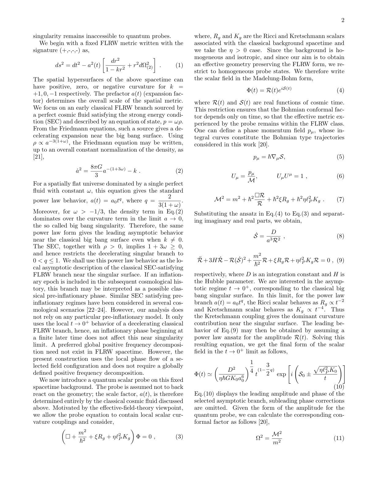
<figcaption class="paper-figure-caption"><b>Fig 1.</b> Low-resolution page preview, page 2</figcaption>
</figure>
<figure class="paper-figure-card">
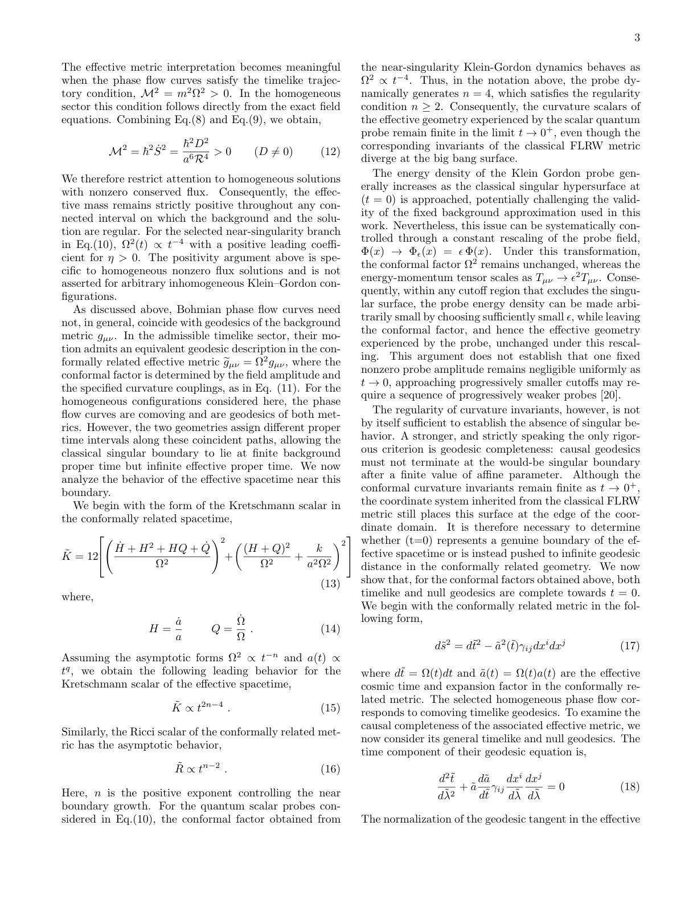
<figcaption class="paper-figure-caption"><b>Fig 2.</b> Low-resolution page preview, page 3</figcaption>
</figure>
<figure class="paper-figure-card">
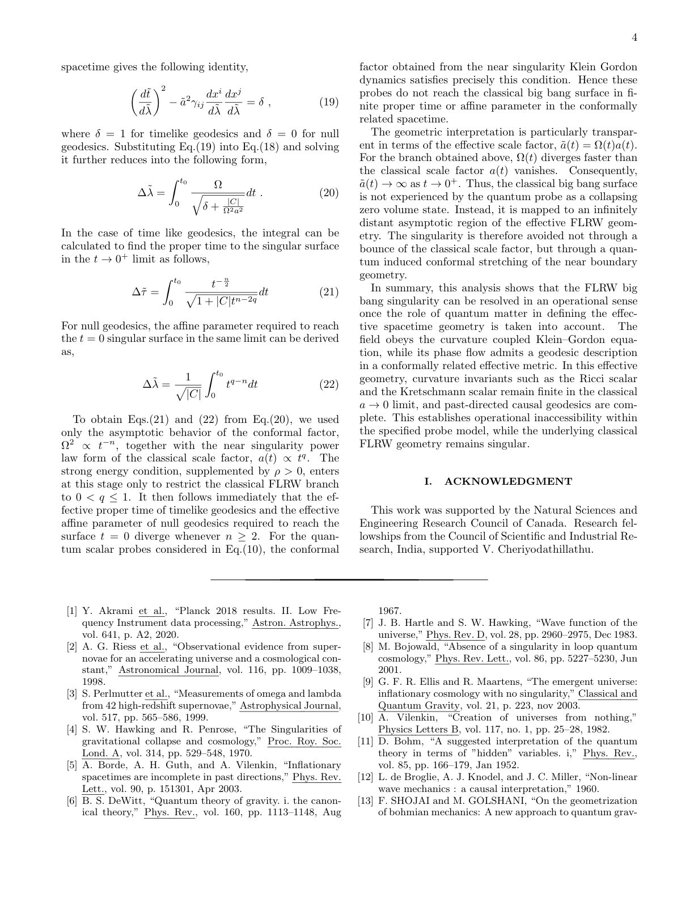
<figcaption class="paper-figure-caption"><b>Fig 3.</b> Low-resolution page preview, page 4</figcaption>
</figure>
<figure class="paper-figure-card">
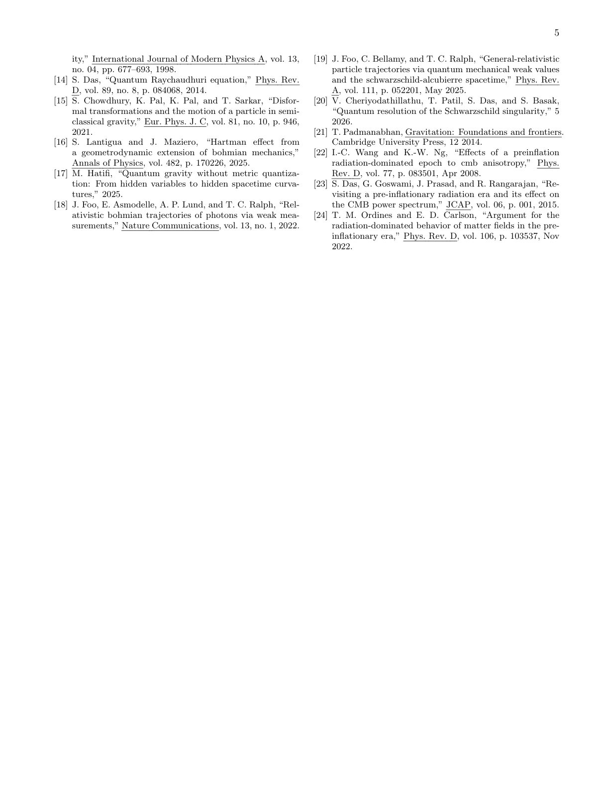
<figcaption class="paper-figure-caption"><b>Fig 4.</b> Low-resolution page preview, page 5</figcaption>
</figure>
</div>

<p><strong>Summary.</strong> This work addresses the Big Bang singularity by treating quantum probes governed by a Klein-Gordon equation on an FLRW background. By analyzing the effective geometry experienced by the probe, the authors show that while the classical spacetime remains singular, the quantum probe cannot reach the singularity in any finite effective time. This suggests an operational resolution of the singularity.</p>
<p><strong>Why it may be interesting.</strong> The concept of operational resolution of singularities via quantum field theory in curved spacetime is a fundamental theoretical tool, drawing parallels to how quantum effects regularize classical infinities in other physical contexts.</p>
<details>
<summary>Detailed structure</summary>
<p><strong>Main problem.</strong> The paper investigates whether the classical Big Bang singularity in cosmology is physically accessible to quantum probes.</p>
<p><strong>Main result.</strong> The classical singularity is operationally inaccessible to quantum probes because the effective geometry experienced by the probe renders curvature invariants finite and requires infinite effective proper time to reach the singularity.</p>
<p><strong>Method.</strong> The authors analyze the dynamics of a quantum scalar field (Klein-Gordon probe) on a classical FLRW background using the Madelung-Bohm decomposition and examining the resulting conformally related effective metric.</p>
<p><strong>Model / system.</strong> The system is the FLRW spacetime background, and the probe is modeled as a quantum scalar field $\Phi$ satisfying a curvature-coupled Klein-Gordon equation. The analysis focuses on the asymptotic behavior near $t 	o 0^+$.</p>
<p><strong>Key observables.</strong> Curvature invariants (Ricci and Kretschmann scalars) in the effective geometry, and the proper time/affine parameter required to reach the singularity.</p>
<p><strong>Important parameters / regimes.</strong> The coupling constants ($\xi, \eta$), the mass term ($m$), and the time evolution parameters derived from the asymptotic ansatz ($\Omega^2 \propto t^{-n}$).</p>
<p><strong>Assumptions / limitations.</strong> The probe does not backreact on the geometry (fixed classical background), and the analysis is restricted to homogeneous probe states.</p>
<p><strong>Paper structure.</strong> The paper establishes the quantum probe dynamics via the coupled Klein-Gordon equation, applies the Madelung-Bohm decomposition, analyzes the asymptotic behavior near the singularity using power-law ansatzes, and concludes by comparing the finite effective proper time to the infinite required time.</p>
</details>
<details>
<summary>Abstract</summary>
<p>We propose an operational resolution of the FLRW big bang singularity using quantum probes satisfying a curvature coupled Klein-Gordon equation. Applying the Madelung-Bohm decomposition of a Klein-Gordon field on a classical near-singularity FLRW background, we show that the induced conformal geometry renders curvature invariants finite and makes past directed causal geodesics complete. The classical big bang surface is therefore inaccessible to this class of quantum probes in finite effective proper time, while the underlying FLRW spacetime remains singular.</p>
</details>
<p><sub><a href="#top">↑ back to top</a></sub></p>

<p><a id="paper-2610.28754"></a></p>
<h3 id="lamb-shift-of-rotational-energy-levels-in-quantum-gravity"><a href="http://arxiv.org/abs/2610.28754v1">Lamb shift of rotational energy levels in quantum gravity</a></h3>
<p><strong>Authors:</strong> Oliver Benz, Marius Krumm, Wolfgang Wieland<br>
<strong>Type:</strong> theory · <strong>Category:</strong> other · <strong>PDF:</strong> <a href="https://arxiv.org/pdf/2610.28754v1">https://arxiv.org/pdf/2610.28754v1</a><br>
<strong>Analysis basis:</strong> full PDF text, analyzed in chunks
<strong>Topic relevance:</strong> <code>analog quantum simulation</code> <strong>2/5</strong> · <code>Keldysh / 2PI / non-Gaussian methods</code> <strong>1/5</strong> · <code>quantum measurements</code> <strong>1/5</strong></p>
<div class="figure-strip-hint">↔ Scroll figures horizontally</div>
<div class="paper-figures-scroll">
<figure class="paper-figure-card">
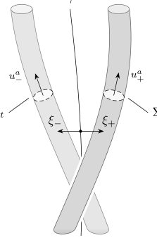
<figcaption class="paper-figure-caption"><b>Fig 1.</b> Figure 1: Left panel: A visual depiction of our physical setup. Our rotor consists of two spherical bodies, each having mass m, mass density ϱ, and radius R. The distance of the masses is D. All of these values are kept constant, and the background metric is flat. The grey waves represent virtual graviton fluctuations that induce the Lamb shift of the rotational energy levels. Right panel: The world tubes of the rotor masses are shown in grey, and rotate around the world line γ of the centre of mass. The hypersurfaces Σt represent the intersection of the world tubes with a t = const. time slice in the reference frame of the centre of mass trajectory. The four-vectors ua ± are the...</figcaption>
</figure>
</div>

<p><strong>Summary.</strong> This paper investigates the gravitational Lamb shift experienced by a quantum rigid rotor due to coupling with virtual gravitons, offering a phenomenological pathway to test quantum gravity effects. By calculating this energy shift, the authors provide a concrete, albeit minute, prediction dependent on the rotor's physical size and mass density. This work bridges fundamental quantum gravity theory with potential, albeit highly challenging, precision measurements.</p>
<p><strong>Why it may be interesting.</strong> While the core is quantum gravity, the methodology of modeling a complex quantum system (the rotor) whose energy levels are perturbed by an external field (gravity) shares conceptual links with how AMO physicists model interactions with external electromagnetic fields or vacuum fluctuations.</p>
<details>
<summary>Detailed structure</summary>
<p><strong>Main problem.</strong> The primary challenge is reconciling quantum mechanics with general relativity to form a theory of quantum gravity, which is difficult to test directly due to the Planck scale energy requirements.</p>
<p><strong>Main result.</strong> The authors derive a concrete, calculable gravitational Lamb shift for the rotational energy levels of a quantum rotor, providing a potential, albeit extremely small, test for quantum gravity effects.</p>
<p><strong>Method.</strong> The study employs perturbative quantum field theory techniques, coupling the linearized metric perturbation (virtual gravitons) to the Hamiltonian of an anisotropic quantum rigid rotor.</p>
<p><strong>Model / system.</strong> The model involves an anisotropic quantum rigid rotor, conceptually analogous to a heavy object composed of many constituents, allowing quantum gravitational effects to be amplified. The analysis uses a multipole expansion of the metric perturbation.</p>
<p><strong>Key observables.</strong> The gravitational Lamb shift ($\Delta E_{	ext{ren}}^L$) of the rotor's energy eigenstates, and the effective rotational constant ($\epsilon_{	ext{eff}}^{	ext{rot}}$).</p>
<p><strong>Important parameters / regimes.</strong> The rotor's spatial extension ($D$), the mass density ($\varrho$), and the ratio of these to critical length scales ($D_{	ext{crit}}$).</p>
<p><strong>Assumptions / limitations.</strong> The analysis relies on linearized gravity, assumes the body is an irrotational fluid, and uses a multipole expansion keeping only the quadrupole term.</p>
<p><strong>Figures summary.</strong> Figure 1 illustrates the physical setup: a rotor consisting of two spherical bodies separated by a distance D, showing the geometry and world tubes.</p>
<p><strong>Paper structure.</strong> The paper progresses from establishing the general motivation (low-energy quantum gravity phenomenology) to deriving the effective action for the rotor, calculating the energy shift via renormalization, and finally presenting the resulting observable shift formula.</p>
</details>
<details>
<summary>Abstract</summary>
<p>One of the major challenges of modern foundational physics is the combination of quantum physics and general relativity into a theory of quantum gravity. A severe obstacle are the required extremely high energy scales for direct tests of quantum gravity effects. In recent years, attention has shifted towards near-future experimental predictions of effective or phenomenological models, such as gravitationally induced entanglement or interactions of linearized gravity with non-relativistic measurement devices. These developments motivate us to study the coupling between the quantized metric perturbation and an anisotropic quantum rigid rotor. The intuitive motivation for our study is that a sufficiently heavy rotor consists of a very large number of component systems. Although quantum gravitational effects are completely negligible at the scale of a single atom or molecule, the effects can get amplified by the sheer number of constituents. The resulting effective model describes the gravitational analogue of the angulon quasiparticle excitations discussed in condensed matter physics, suggesting a pathway for future analogue experiments. As a first concrete test of our model, we derive the gravitational Lamb shift for the energy eigenstates of the rotor, which become dressed by a cloud of virtual gravitons. Although the effect is very small, it could provide a concrete test for whether gravity is truly quantum.</p>
</details>
<p><sub><a href="#top">↑ back to top</a></sub></p>

<p><a id="paper-2610.29341"></a></p>
<h3 id="quantics-tensor-trains-for-multiloop-functional-renormalization-group-in-multiorbital-impurity-models"><a href="http://arxiv.org/abs/2610.29341v1">Quantics tensor trains for multiloop functional renormalization group in multiorbital impurity models</a></h3>
<p><strong>Authors:</strong> Hyun-Yong Lee, Naoki Kawashima<br>
<strong>Type:</strong> theory · <strong>Category:</strong> strongly correlated electrons · <strong>PDF:</strong> <a href="https://arxiv.org/pdf/2610.29341v1">https://arxiv.org/pdf/2610.29341v1</a><br>
<strong>Analysis basis:</strong> full PDF text, analyzed in chunks
<strong>Topic relevance:</strong> <code>Keldysh / 2PI / non-Gaussian methods</code> <strong>2/5</strong> · <code>methods for driven-dissipative</code> <strong>2/5</strong></p>
<div class="figure-strip-hint">↔ Scroll figures horizontally</div>
<div class="paper-figures-scroll">
<figure class="paper-figure-card">
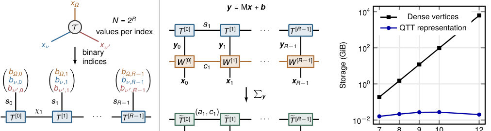
<figcaption class="paper-figure-caption"><b>Fig 1.</b> FIG. 1. Quantics representation and compressed frequency transformations. (a) Binary digits at the same significance form the local indices of a tensor train. (b) Contraction with the analytical carry matrix product operator changes the frequency coordinates, i.e., the frequency variables of a channel parametrization; 𝒙𝑗and 𝒚𝑗denote the binary digits at site 𝑗of the target and source coordinates, and virtual bonds combine tensor and carry indices. (c) Storage requirements for the two-loop QTT representation and for six dense vertex amplitudes on grids with 𝑁= 2𝑅points per frequency axis. Dense storage is an estimate, not peak memory or runtime.</figcaption>
</figure>
<figure class="paper-figure-card">
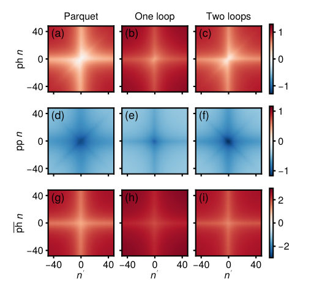
<figcaption class="paper-figure-caption"><b>Fig 2.</b> FIG. 2. Channel-resolved vertex near 𝑢= 1, 𝑅= 8 (𝑁= 256), and 𝑇/𝑈= 10−2. Columns show the parquet reference, one-loop, and two-loop results; rows show the ph, pp, and ph channels. Colors give Re 𝛾𝑟,𝐷/𝑈at zero bosonic transfer. The axes are fermionic Matsubara indices; central frequency windows are displayed.</figcaption>
</figure>
<figure class="paper-figure-card">
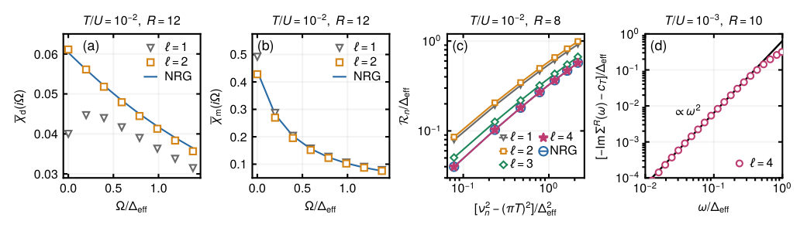
<figcaption class="paper-figure-caption"><b>Fig 3.</b> FIG. 3. Single-impurity dynamics. (a,b) Charge (d) and magnetic (m) susceptibilities at 𝑅= 12 (𝑁= 4096) as functions of the bosonic Matsubara frequency Ω, in the NRG normalization defined in Methods. (c) Self-energy residual R𝑛defined in Eq. (9), at 𝑅= 8 (𝑁= 256), plotted against the fermionic Matsubara frequency 𝜈𝑛; the four-loop result (stars) reproduces the NRG residual (open circles). Panels (a–c) use 𝑇/𝑈= 10−2. (d) Four-loop scattering rate as a function of real frequency 𝜔at 𝑇/𝑈= 10−3 and 𝑅= 10 (𝑁= 1024), after Padé continuation and subtraction of the constant 𝑐𝑇(open circles); the black line indicates quadratic dependence. Colors identify loop orders in (a–c).</figcaption>
</figure>
<figure class="paper-figure-card">
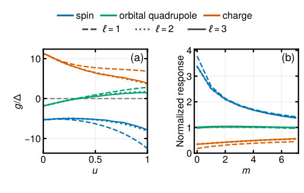
<figcaption class="paper-figure-caption"><b>Fig 4.</b> FIG. 4. Two-orbital Hund impurity at 𝐽/𝑈= 0.125 and 𝑅= 8 (𝑁= 256). (a) Spin, orbital-quadrupole, and charge interaction components along the flow; 𝑢increases as the regulator decreases at fixed 𝑈. (b) Dynamical spin, orbital-quadrupole, and charge responses near 𝑢= 1, normalized by their corresponding dressed bubble contributions; 𝑚is the bosonic Matsubara index. Line styles distinguish one, two, and three loops. The orbital interaction changes sign along the flow, while the responses retain the hierarchy spin, orbital quadrupole, and charge.</figcaption>
</figure>
<figure class="paper-figure-card">
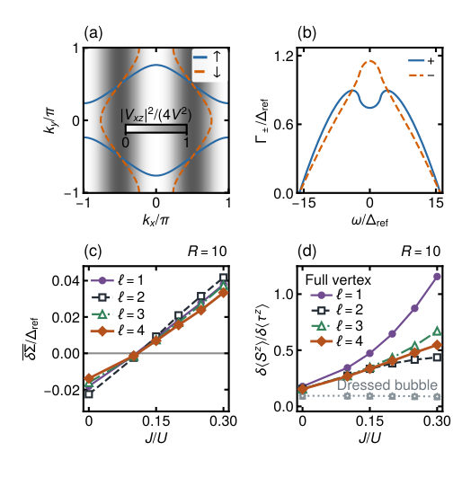
<figcaption class="paper-figure-caption"><b>Fig 5.</b> FIG. 5. Electronic correlations and orbital response in an altermagnetic environment. (a) Host Fermi contours and 𝑥𝑧hybridization weight. (b) Hybridization widths Γ± = −Im Δ±(𝜔+ 𝑖0+) of the two spin–orbital groups as functions of real frequency 𝜔. (c) Self-energy difference averaged over the Matsubara frequencies 𝜈𝑛, 𝑛= 2, . . . , 8. (d) Spin polarization of the orbital-field response. Panels (c,d) show one- to four-loop results at 𝑅= 10 (𝑁= 1024), 𝑇/𝑈= 10−2, and Λ ≃0.5Δref for six Hund couplings. In (d), the full vertex produces increasing spin selectivity at every loop order, whereas the four-loop dressed bubble (gray) varies weakly with Hund coupling.</figcaption>
</figure>
</div>

<p><strong>Summary.</strong> This paper introduces a novel computational technique using quantics tensor trains (QTT) to perform multiloop functional renormalization group (fRG) calculations for multiorbital impurity models. This method overcomes the severe memory limitations associated with calculating full frequency dependence. The results demonstrate how strong electronic correlations, particularly via Hund coupling, induce complex, distinct spin, orbital, and charge responses in these correlated electron systems.</p>
<p><strong>Why it may be interesting.</strong> The development of the QTT method provides a powerful, memory-efficient tool for calculating frequency-dependent correlation functions in strongly correlated electron systems, which is highly relevant for understanding complex materials physics.</p>
<details>
<summary>Detailed structure</summary>
<p><strong>Main problem.</strong> The primary challenge is calculating the full frequency dependence of electronic interactions in multiorbital systems, which is computationally prohibitive using standard methods.</p>
<p><strong>Main result.</strong> The authors successfully apply the multiloop functional renormalization group (fRG) using the quantics tensor train (QTT) representation, revealing distinct spin, orbital, and charge responses in impurity models.</p>
<p><strong>Method.</strong> The study employs the functional renormalization group (fRG) framework, specifically multiloop corrections, implemented via the novel quantics tensor train (QTT) representation to handle frequency dependence efficiently.</p>
<p><strong>Model / system.</strong> The work focuses on multiorbital impurity models, often related to the Anderson impurity model, where electronic correlations are governed by interactions like the Hund coupling. The calculations involve flow equations for the self-energy and two-particle vertex functions.</p>
<p><strong>Key observables.</strong> Self-energy ($\Sigma_\Lambda$), two-particle vertex ($\Gamma_\Lambda$), dynamical charge and magnetic susceptibilities ($\chi_d, \chi_m$), and spin/orbital responses.</p>
<p><strong>Important parameters / regimes.</strong> Hund coupling ($J/U$), temperature ($T/U$), and the regulator cutoff ($\Lambda$).</p>
<p><strong>Assumptions / limitations.</strong> The QTT formulation is presented as a numerical approximation to the underlying multiloop fRG equations, and the method retains the full three-frequency dependence without explicit high-frequency parametrization.</p>
<p><strong>Figures summary.</strong> Figures illustrate the QTT representation for frequency transformations and compare storage requirements against dense vertex amplitudes. Supporting figures show the evolution of susceptibilities and self-energy differences as a function of Hund coupling and loop order.</p>
<p><strong>Paper structure.</strong> The paper establishes the computational bottleneck of multiloop fRG, introduces the QTT method for efficient frequency handling, applies this to multiorbital impurity models, and presents detailed results on how spin, orbital, and charge responses are modified by Hund coupling and loop order.</p>
</details>
<details>
<summary>Abstract</summary>
<p>The full frequency dependence of electronic interactions is central to dynamical correlations, but its numerical cost restricts multiorbital calculations. We formulate the multiloop functional renormalization group directly in the quantics tensor train representation, retaining all three independent vertex frequencies over broad ranges without an explicit high-frequency parametrization. Analytical tensor operators perform frequency transformations and internal summations without dense vertex intermediates. Multiloop corrections improve agreement of vertices and responses with independent references and reproduce the low-energy numerical renormalization group self-energy. Lower-temperature calculations resolve a quadratic frequency contribution to the analytically continued scattering rate. A degenerate two-orbital impurity exhibits distinct spin, orbital, and charge responses at fixed Hund coupling. In a compensated altermagnetic environment, an orbital-level splitting induces a local spin response despite zero magnetization of the unperturbed impurity. Increasing Hund coupling suppresses the orbital response while increasing its spin polarization. Renormalized one-particle propagation alone does not reproduce this strong polarization dependence. These results extend compressed multiloop calculations to dynamical correlations in multiorbital environments.</p>
</details>
<p><sub><a href="#top">↑ back to top</a></sub></p>

<p><a id="paper-2610.29791"></a></p>
<h3 id="quantum-charge-as-a-particleantiparticle-label"><a href="http://arxiv.org/abs/2610.29791v1">Quantum Charge as a Particle/Antiparticle Label</a></h3>
<p><strong>Authors:</strong> Alexander D. Popov<br>
<strong>Type:</strong> theory · <strong>Category:</strong> other · <strong>PDF:</strong> <a href="https://arxiv.org/pdf/2610.29791v1">https://arxiv.org/pdf/2610.29791v1</a><br>
<strong>Analysis basis:</strong> full PDF text, analyzed in chunks
<strong>Topic relevance:</strong> <code>Keldysh / 2PI / non-Gaussian methods</code> <strong>2/5</strong> · <code>quantum measurements</code> <strong>2/5</strong></p>
<div class="figure-strip-hint">↔ Scroll figures horizontally</div>
<div class="paper-figures-scroll">
<figure class="paper-figure-card">
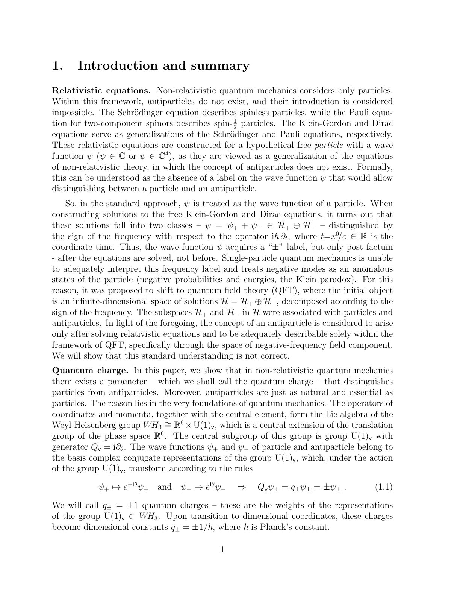
<figcaption class="paper-figure-caption"><b>Fig 1.</b> Low-resolution page preview, page 2</figcaption>
</figure>
<figure class="paper-figure-card">
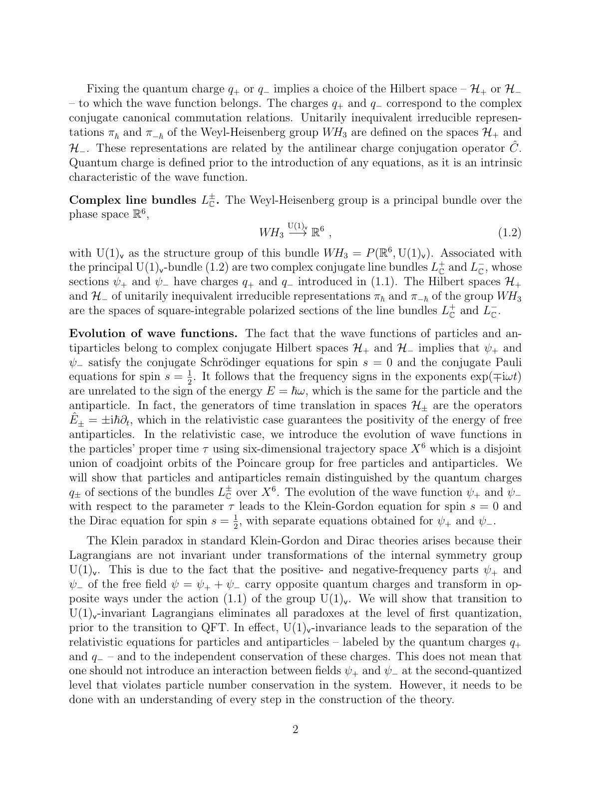
<figcaption class="paper-figure-caption"><b>Fig 2.</b> Low-resolution page preview, page 3</figcaption>
</figure>
<figure class="paper-figure-card">
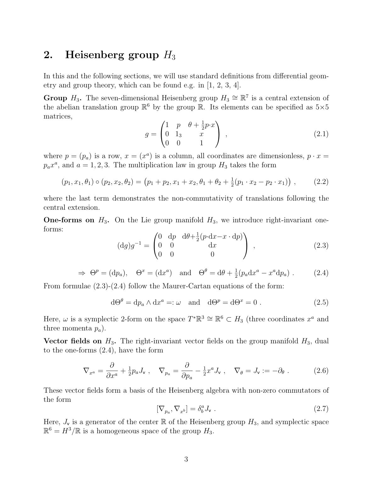
<figcaption class="paper-figure-caption"><b>Fig 3.</b> Low-resolution page preview, page 4</figcaption>
</figure>
<figure class="paper-figure-card">
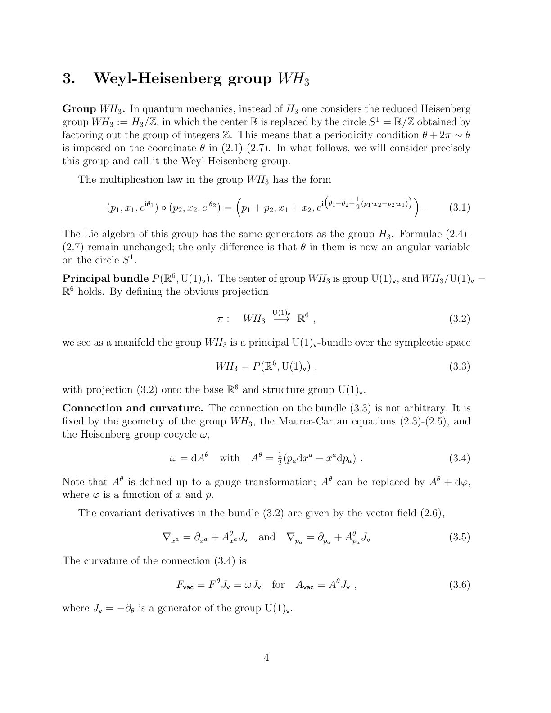
<figcaption class="paper-figure-caption"><b>Fig 4.</b> Low-resolution page preview, page 5</figcaption>
</figure>
<figure class="paper-figure-card">
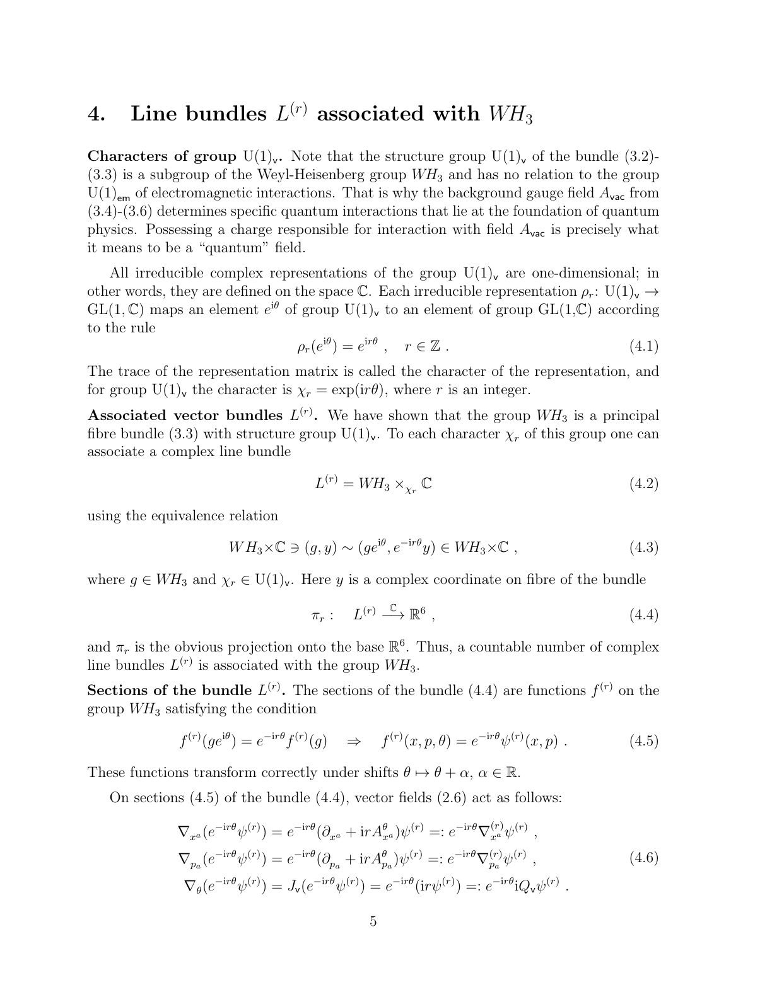
<figcaption class="paper-figure-caption"><b>Fig 5.</b> Low-resolution page preview, page 6</figcaption>
</figure>
</div>

<p><strong>Summary.</strong> This theoretical paper reinterprets particle/antiparticle duality by grounding it in the symmetry structure of the Weyl-Heisenberg group. It shows that defining wave functions with intrinsic 'quantum charges' ($q_\pm$) and enforcing $ ext{U}(1)_v$-invariance is the mathematical requirement needed to eliminate paradoxes found in standard relativistic quantum theories.</p>
<p><strong>Why it may be interesting.</strong> While not directly focused on AMO systems, the rigorous mathematical treatment of symmetry constraints and the separation of particle/antiparticle states based on fundamental group theory is highly relevant to understanding topological aspects of quantum matter and gauge theories.</p>
<details>
<summary>Detailed structure</summary>
<p><strong>Main problem.</strong> The paper aims to fundamentally relate the concept of particles and antiparticles to the mathematical structure of the Weyl-Heisenberg group ($   ext{WH}_3$) and show that restoring a specific symmetry eliminates paradoxes in relativistic quantum theories.</p>
<p><strong>Main result.</strong> The existence of distinct, unitarily inequivalent Hilbert spaces ($\mathcal{H}_+$ and $\mathcal{H}_-$), labeled by intrinsic 'quantum charges' ($q_+$ and $q_-$), is necessary to maintain $   ext{U}(1)_v$-invariance and resolve issues like the Klein paradox.</p>
<p><strong>Method.</strong> The analysis uses advanced mathematical tools, including principal bundles, complex line bundles, and the representation theory of the Weyl-Heisenberg group, to impose symmetry constraints on quantum field descriptions.</p>
<p><strong>Model / system.</strong> The model is a theoretical framework applied to relativistic quantum mechanics, specifically analyzing free scalar (Klein-Gordon) and spinor (Dirac) fields. The underlying mathematical structure is the $ ext{U}(1)_v$-bundle over the phase space $\mathbb{R}^6$.</p>
<p><strong>Key observables.</strong> Quantum charges ($q_\pm$), electric charges ($e_\pm$), energy ($E$), and the wave functions ($\psi_+, \psi_-$) themselves.</p>
<p><strong>Important parameters / regimes.</strong> The fundamental constants $\hbar$ and the symmetry charges $q_\pm = \pm 1/\hbar$. The analysis also considers the non-relativistic limit ($c 	o \infty$).</p>
<p><strong>Assumptions / limitations.</strong> The core assumption is that the physical description must be invariant under the $   ext{U}(1)_v$ symmetry group to be physically consistent.</p>
<p><strong>Paper structure.</strong> The paper builds from establishing the $   ext{WH}_3$ framework and the concept of intrinsic quantum charge ($q_\pm$) to analyzing how this structure dictates the form of relativistic wave equations (Klein-Gordon/Dirac). It then demonstrates that maintaining $   ext{U}(1)_v$-invariance separates particle and antiparticle descriptions, resolving paradoxes.</p>
</details>
<details>
<summary>Abstract</summary>
<p>We show that the concept of particles and antiparticles is related to the Weyl-Heisenberg group $W\!H_3$. Its generators are the position operators $\hat x^a$, the momentum operators $\hat p_a$, and the central element $Q_{\sf{v}}$, which defines a subgroup U(1)$_{\sf v}$ of $W\!H_3$. We show that the wave functions have a charge relative to the group U(1)$_{\sf{v}}$ equal to either $q_+=1/\hbar$ (particle $ψ_+$) or $q_-=-1/\hbar$ (antiparticle $ψ_-$). We call these eigenvalues of the operator $Q_{\sf{v}}$ quantum charges: $Q_{\sf{v}}ψ_\pm^{}=q_\pm^{}ψ_\pm^{}$. The wave functions $ψ_+$ and $ψ_-$ belong to the Hilbert spaces $\mathcal{H}_+$ and $\mathcal{H}_-$, on which unitarily inequivalent representations $π_\hbar$ and $π_{-\hbar}$ of the Weyl-Heisenberg group $W\!H_3$ are defined. These representations are related to each other by the antilinear charge conjugation operator $\hat C$, which maps $\mathcal{H}_+, q_+$ to $\mathcal{H}_-, q_-$. Charges $q_\pm^{}$ are intrinsic characteristics of the wave functions $ψ_\pm^{}$, similar to spin and electric charge. The wave function possesses one of these charges, $q_+$ or $q_-$, prior to the specification of any equations. We show that negative probabilities/energies and the Klein paradox in Klein-Gordon and Dirac theories are consequences of the violation of U(1)$_{\sf v}$-invariance in these theories. Restoring this invariance separates particle and antiparticles and eliminates all paradoxes at the level of first-quantized relativistic theories.</p>
</details>
<p><sub><a href="#top">↑ back to top</a></sub></p>

<p><a id="paper-2610.29919"></a></p>
<h3 id="resource-analysis-of-quantum-optimization-algorithms-via-variational-methods"><a href="http://arxiv.org/abs/2610.29919v1">Resource Analysis of Quantum Optimization Algorithms via Variational Methods</a></h3>
<p><strong>Authors:</strong> Vitor Dallabona, Lucas Friedrich, Jonas Maziero<br>
<strong>Type:</strong> theory · <strong>Category:</strong> quantum information and computing · <strong>PDF:</strong> <a href="https://arxiv.org/pdf/2610.29919v1">https://arxiv.org/pdf/2610.29919v1</a><br>
<strong>Analysis basis:</strong> full PDF text, analyzed in chunks
<strong>Topic relevance:</strong> <code>Keldysh / 2PI / non-Gaussian methods</code> <strong>2/5</strong> · <code>quantum measurements</code> <strong>2/5</strong></p>
<div class="figure-strip-hint">↔ Scroll figures horizontally</div>
<div class="paper-figures-scroll">
<figure class="paper-figure-card">
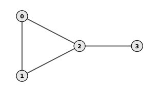
<figcaption class="paper-figure-caption"><b>Fig 1.</b> Figure 1: Topology of the graph used as the computational instance of the Minimum Vertex Cover (MVC) problem. The graph has four vertices (|V | = 4) and four edges (|E| = 4), forming a triangle connected to a pendant vertex.</figcaption>
</figure>
<figure class="paper-figure-card">
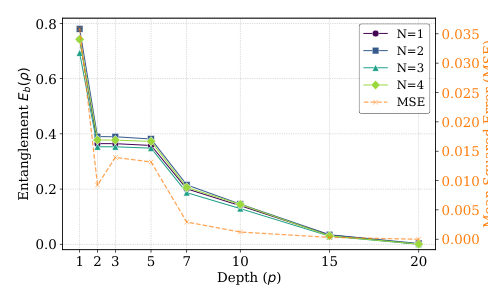
<figcaption class="paper-figure-caption"><b>Fig 2.</b> Figure 2: Evolution of the Bures entanglement Eb and mean squared error (MSE) as functions of the QAOA circuit depth p. Entanglement initially increases, reaching a maximum at shallow depth, and subsequently decreases as the algo- rithm approaches convergence (MSE →0). The curves for N = 1, . . . , 4 correspond to different cardinalities of the learner circuit’s state. The hyperparameters used for all val- ues of N are l1 = 2 (number of layers in the parametrization of VC), l2 = 16 (number of layers in the parametrization of UC), l = 3 (number of layers in the parametrizations of UA and UB), learning rate η = 0.1, and 100 training epochs.</figcaption>
</figure>
<figure class="paper-figure-card">
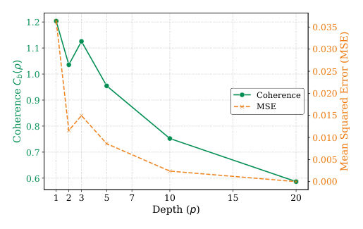
<figcaption class="paper-figure-caption"><b>Fig 3.</b> Figure 3: Evolution of the Bures coherence Cb and mean squared error MSE as functions of the QAOA circuit depth p. The decrease in coherence indicates a reduction in the state’s coherence relative to the computational basis as the algorithm progresses toward a solution. The hyperparameters used in the resource-quantification procedure are l1 = 2 (number of layers in the parametrization of VA), l2 = 16 (number of layers in the parametrization of UB), learning rate η = 0.1, and 100 training epochs.</figcaption>
</figure>
<figure class="paper-figure-card">
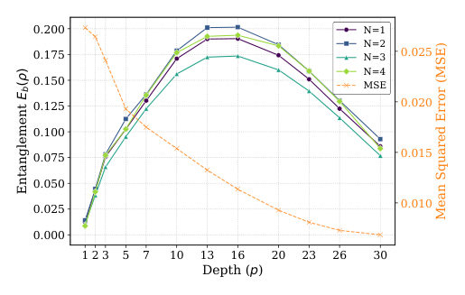
<figcaption class="paper-figure-caption"><b>Fig 4.</b> Figure 4: Evolution of Eb and MSE across cricuit depth p for the FALQON algorithm. Compared to QAOA, FALQON exhibits a much lower peak entanglement and a smoother re- source trajectory. The general hyperparameters used for all values of N are given by: l1 = 2 (number of layers employed in the parametrization of VC); l2 = 16 (number of layers em- ployed in the parametrization of UC); l = 3 (number of layers employed in the parametrization of UA and UB); η = 0.1 (learning rate); and 80 Epochs.</figcaption>
</figure>
<figure class="paper-figure-card">
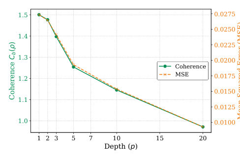
<figcaption class="paper-figure-caption"><b>Fig 5.</b> Figure 5: Evolution of Cb and MSE for the FALQON algo- rithm. The coherence smoothly and monotonically decays in direct correlation with the algorithmic error. The hyperpa- rameters used are given by: l1 = 4 (number of layers em- ployed in the parametrization of VA); l2 = 12 (number of layers employed in the parametrization of UB); η = 0.1; and 100 Epochs.</figcaption>
</figure>
</div>

<p><strong>Summary.</strong> This work analyzes how quantum resources like entanglement and coherence change when Variational Quantum Algorithms (VQAs) solve optimization problems like Minimum Vertex Cover. By using a Bures metric framework, the authors compare different algorithmic strategies, finding distinct resource trajectories. This research provides critical insights into the resource requirements and physical behavior of quantum computation methods.</p>
<p><strong>Why it may be interesting.</strong> The detailed tracking of entanglement and coherence provides a diagnostic tool for understanding the underlying quantum mechanics of optimization, which is crucial for designing robust quantum algorithms for NISQ devices.</p>
<details>
<summary>Detailed structure</summary>
<p><strong>Main problem.</strong> The paper investigates how quantum resources, specifically entanglement and coherence, evolve during the execution of Variational Quantum Algorithms (VQAs) applied to combinatorial optimization problems.</p>
<p><strong>Main result.</strong> The study reveals distinct resource trajectories for different optimization strategies (QAOA vs. FALQON), showing that resource accumulation and decay patterns are highly dependent on the chosen algorithm.</p>
<p><strong>Method.</strong> A variational resource-quantification framework based on the Bures metric and Uhlmann's theorem is employed to estimate entanglement and coherence without full quantum state tomography.</p>
<p><strong>Model / system.</strong> The primary model is the application of VQAs (QAOA, FALQON) to the Minimum Vertex Cover problem, which is mapped to an Ising/QUBO formulation. A secondary application involves VQE for $   ext{H}_2$ molecular dissociation.</p>
<p><strong>Key observables.</strong> Bures entanglement ($  ext{E}_b$), Bures coherence ($ ext{C}_b$), Mean Squared Error ($ ext{MSE}$), and the cost function expectation value.</p>
<p><strong>Important parameters / regimes.</strong> Circuit depth ($p$), variational parameters ($  heta$), and the relative strengths of Hamiltonian terms ($A$ and $B$ in the QUBO formulation).</p>
<p><strong>Assumptions / limitations.</strong> The resource quantification method relies on optimizing an auxiliary circuit to estimate fidelity, avoiding full state tomography. The analysis assumes the applicability of the variational framework to capture resource dynamics.</p>
<p><strong>Figures summary.</strong> Figures illustrate the evolution of entanglement and coherence versus optimization error/depth for MVC using QAOA and FALQON variants, and show resource changes during $  ext{H}_2$ dissociation using VQE.</p>
<p><strong>Paper structure.</strong> The paper first introduces the VQA context and the resource quantification method. It then analyzes the resource evolution for MVC using QAOA and FALQON, comparing their trajectories. Finally, it applies the framework to quantum chemistry (VQE) for $ ext{H}_2$ to demonstrate resource dependence on the physical process.</p>
</details>
<details>
<summary>Abstract</summary>
<p>Variational Quantum Algorithms (VQAs) are promising approaches for solving combinatorial optimization problems on near-term quantum devices. However, the role played by quantum resources such as entanglement and coherence during the optimization process remains poorly understood. In this work, we investigate the evolution of these resources in two VQAs--the Quantum Approximate Optimization Algorithm (QAOA) and the Feedback-based Algorithm for Quantum Optimization (FALQON)--applied to the Minimum Vertex Cover problem. We employ a variational resource-quantification framework based on the Bures metric and Uhlmann's theorem, in which an auxiliary quantum circuit is optimized to identify the closest resource-free states. This approach allows us to quantify Bures entanglement and Bures coherence of the algorithmic states without requiring full quantum state tomography. For the considered problem instance, QAOA exhibits a pronounced accumulation of entanglement in its initial layers, followed by a progressive reduction as the algorithm converges toward the optimal solution. Its coherence likewise decreases overall with increasing circuit depth, although a finite residual value persists due to the degeneracy of the optimal-solution subspace. In contrast, FALQON exhibits a substantially lower entanglement peak, reached at larger circuit depth, followed by a decay as convergence proceeds. Its coherence decreases smoothly and monotonically together with the optimization error. These results reveal distinct quantum-resource trajectories associated with the two optimization strategies and illustrate how entanglement and coherence evolve as variational quantum states approach solutions of a classical combinatorial optimization problem.</p>
</details>
<p><sub><a href="#top">↑ back to top</a></sub></p>

<p><a id="paper-2610.29762"></a></p>
<h3 id="encoding-a-bosonic-mode-into-qubits-for-simulating-boson-matter-interactions"><a href="http://arxiv.org/abs/2610.29762v1">Encoding a bosonic mode into qubits for simulating boson-matter interactions</a></h3>
<p><strong>Authors:</strong> Maarten Stroeks, Jelena Mackeprang, Yaroslav Herasymenko, Barbara Terhal<br>
<strong>Type:</strong> both · <strong>Category:</strong> quantum information and computing · <strong>PDF:</strong> <a href="https://arxiv.org/pdf/2610.29762v1">https://arxiv.org/pdf/2610.29762v1</a><br>
<strong>Analysis basis:</strong> full PDF text, analyzed in chunks
<strong>Topic relevance:</strong> <code>analog quantum simulation</code> <strong>2/5</strong> · <code>quantum measurements</code> <strong>1/5</strong></p>
<div class="figure-strip-hint">↔ Scroll figures horizontally</div>
<div class="paper-figures-scroll">
<figure class="paper-figure-card">
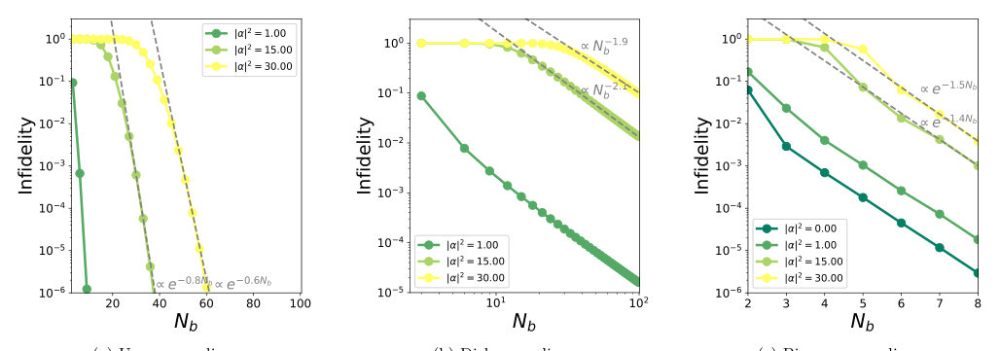
<figcaption class="paper-figure-caption"><b>Fig 1.</b> FIG. 1. Encoding error expressed as the infidelity of encoded displaced vacuum states w.r.t. the exact displaced vacuum state |α⟩. The infidelity w.r.t. the exact displaced vacuum state is approximated by 1 − ⟨ψE| ΨN′ b⟩ 2, where |ψE⟩is the encoded Nb-qubit displaced vacuum extended to N′ b ( &gt; Nb) qubits and | ΨN′ b⟩is the N′ b-qubit displaced vacuum state, where N′ b is</figcaption>
</figure>
<figure class="paper-figure-card">
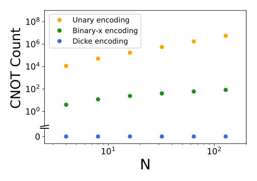
<figcaption class="paper-figure-caption"><b>Fig 2.</b> FIG. 2. CNOT count required to achieve an error DE(α) − ˜DE(α) E ⩽10−3, with ˜DE(α) the circuit implementation of the encoded displacement DE(α) using a certain number CNOT gates, and ||·||E denoting the spectral norm on the en- coded subspace. We take |α| = 1 and the plotted CNOT counts are the worst-case CNOT counts over the phase of α. Here N = Nb for the unary Fock encoding, N = Nb + 1 for the Dicke encoding and N = 2Nb for the binary-x encoding, hence N can be understood as a cutoff. Note that we do not consider the error imposed by the encoding itself here.</figcaption>
</figure>
<figure class="paper-figure-card">

<figcaption class="paper-figure-caption"><b>Fig 3.</b> FIG. 3. Circuit depth and CNOT count required to achieve a given error ϵ∗on the displacement operator D(α) – for any α s.t. |α|2 = 15 – as a function of Nb. To simplify our analysis, we say that error ϵ∗is attained if the upper bound in Eq. (19) is smaller than ϵ∗. We take ϵ∗= 0.3. The vertical lines indicate the lowest Nb values with such small error ϵ∗. We simulate up to Nb = 10 for the binary quadrature encoding due to memory constraints.</figcaption>
</figure>
<figure class="paper-figure-card">

<figcaption class="paper-figure-caption"><b>Fig 4.</b> FIG. 4. Boson number ⟨a†a⟩(t) under the Dicke Hamiltonian H in Eq. (21), starting in the vacuum state for the bosonic mode and |1⟩⊗Na for the atom-qubits (with Na = 3). We take ω = ω0 here.</figcaption>
</figure>
<figure class="paper-figure-card">

<figcaption class="paper-figure-caption"><b>Fig 5.</b> FIG. 5. CNOT count required to achieve an error ϵ∗on the average boson number of a time-evolved vacuum state. In (a,b), we take g = 0.6 ∗gc (i.e., the normal phase), and ϵ∗= 0.3 (being 10% of maximum boson number over simulated time interval) and ϵ∗= 0.1. In (c), we have g = 3.1 ∗gc (i.e., the super-radiant phase), and ϵ∗= 2.2 (also being 10% of maximum boson number over simulated time interval). Throughout, we take Na = 3, and the total time interval 40/ω (with ω = ω0 = 1). The CNOT count includes the preparation of the (approximate) vacuum state for the binary quadrature encoding as discussed in Appendix B. We pick K = ⌈23/4∗Nb⌉, informed by Figure 9b in Appendix B. We simulate up to Nb...</figcaption>
</figure>
</div>

<p><strong>Summary.</strong> This paper compares several methods for encoding a bosonic field into qubits to simulate boson-matter interactions. By analyzing space-time costs and noise resilience, the authors determine that the binary quadrature encoding is generally superior. The findings provide critical guidelines for mapping continuous quantum physics onto near-term quantum hardware architectures.</p>
<p><strong>Why it may be interesting.</strong> This work directly addresses the crucial resource overhead associated with quantum simulation, providing quantitative metrics to guide the choice of encoding scheme for implementing continuous variable physics on discrete qubit hardware.</p>
<details>
<summary>Detailed structure</summary>
<p><strong>Main problem.</strong> The paper investigates the trade-offs in encoding a continuous bosonic mode into a discrete qubit system to simulate complex boson-matter interactions.</p>
<p><strong>Main result.</strong> The binary quadrature encoding is found to be the most favorable approach, offering a good balance between space efficiency and time efficiency, although the Dicke encoding yields shallower circuits at the cost of many qubits.</p>
<p><strong>Method.</strong> The authors use classical simulations to compare various encoding schemes (Unary, Dicke, Binary Quadrature) by analyzing the space-time cost (qubits, circuit depth, CNOT count) and noise resilience for implementing key operations like displacement and Hamiltonian evolution.</p>
<p><strong>Model / system.</strong> The system involves simulating interactions between a bosonic mode (infinite-dimensional Hilbert space) and a set of qubits representing matter degrees of freedom. The core challenge is mapping the bosonic operators ($\hat{a}, \hat{a}^\dagger$) onto qubit operators ($\hat{x}_E, \hat{p}_E$).</p>
<p><strong>Key observables.</strong> Encoding error (infidelity), circuit depth, CNOT count, and Trotterization error ($\epsilon_T$).</p>
<p><strong>Important parameters / regimes.</strong> Boson number ($m$), number of qubits ($N_b$), displacement parameter ($\alpha$), and simulation time ($t$).</p>
<p><strong>Assumptions / limitations.</strong> The study relies on classical simulations for cost assessment, and the analysis of the commutator norm for the binary quadrature encoding is noted as potentially overly pessimistic.</p>
<p><strong>Figures summary.</strong> Figures compare encoding error vs. $N_b$ for different encodings, and show circuit cost metrics (CNOT count, depth) for implementing time evolution under the Dicke Hamiltonian.</p>
<p><strong>Paper structure.</strong> The paper systematically compares multiple encoding methods (Unary, Dicke, Binary Quadrature) by analyzing the cost of implementing fundamental operations like displacement and Hamiltonian evolution, culminating in a comparison of error scaling and circuit resources.</p>
</details>
<details>
<summary>Abstract</summary>
<p>We explore the space-time cost of encoding of a bosonic mode into a set of qubits via various encodings, and their resilience to noise. In particular, we compare the performance of the unary Fock state encoding, an unexplored encoding of Fock states into Dicke states (``Dicke'' encoding), and the binary quadrature encoding. We do so by considering a displacement as well as a simulation of a Dicke model, coupling a bosonic mode to a set of atoms represented as qubits. Using classical simulations, we assess the accuracy and optimized space-time costs in terms of number of qubits, circuit depth and CNOT count of a quantum simulation of the time dynamics using these encodings. Although our study is far from comprehensive, we find that the binary quadrature encoding is overall most favorable in terms of being very space-efficient and relatively time-efficient due to the use of the quantum Fourier transform. Our novel Dicke encoding leads to very shallow circuits, but pays in terms of using many more qubits. We probe the use of an H2-2 Quantinuum trapped-ion qubit device (56 qubits) for displacement and Dicke model simulation in the low boson-number regime, where we find that noise leads to visible deviations from ideal circuit dynamics.</p>
</details>
<p><sub><a href="#top">↑ back to top</a></sub></p>

<p><a id="paper-2610.28732"></a></p>
<h3 id="interacting-quantum-reference-frames"><a href="http://arxiv.org/abs/2610.28732v1">Interacting quantum reference frames</a></h3>
<p><strong>Authors:</strong> Leonardo Chataignier, Alexander R. H. Smith<br>
<strong>Type:</strong> theory · <strong>Category:</strong> other · <strong>PDF:</strong> <a href="https://arxiv.org/pdf/2610.28732v1">https://arxiv.org/pdf/2610.28732v1</a><br>
<strong>Analysis basis:</strong> full PDF text, analyzed in chunks
<strong>Topic relevance:</strong> <code>quantum measurements</code> <strong>2/5</strong> · <code>Keldysh / 2PI / non-Gaussian methods</code> <strong>1/5</strong></p>
<div class="figure-strip-hint">↔ Scroll figures horizontally</div>
<div class="paper-figures-scroll">
<figure class="paper-figure-card">

<figcaption class="paper-figure-caption"><b>Fig 1.</b> FIG. 2. A pictorial representation of a complete, gauge- invariant relational Dirac observable FR(r; a) that describes a partial system observable with effect operators ES(a) for a ∈ΩA relative to a reference frame with partial orientation observable with effect densities ER(r) = |r⟩⟨r| for r ∈GR.</figcaption>
</figure>
<figure class="paper-figure-card">

<figcaption class="paper-figure-caption"><b>Fig 2.</b> FIG. 3. (Top) A pictorial representation of the joint state |ψBC|A(x)⟩of BC from the perspective of A. (Bottom) A plot of the purity µ := tr ( ρ2 C ) of the reduced state of C from the perspective of B as a measure of entanglement between A and C in the transformed state |ψAC|B(y)⟩of AC from the perspective of B for different values of d := z2 −z1/σ. The purity was computed numerically in Mathematica with a precision goal of two decimal places using the method “Mul- tidimensionalRule”.</figcaption>
</figure>
</div>

<p><strong>Summary.</strong> This work develops a formalism for quantum reference frames in gauge theories, extending previous work to include interactions between the reference frame and the system. By proving the unitarity of the change-of-frame map, the authors provide a consistent, gauge-invariant description that avoids non-unitarity issues common in such setups. This is crucial for applying quantum mechanics to scenarios involving relative motion or time measurement.</p>
<p><strong>Why it may be interesting.</strong> The core result on the unitarity of the change-of-frame map is highly relevant for any field dealing with relational observables or time evolution in curved/non-inertial backgrounds, as it provides a rigorous framework for treating interactions.</p>
<details>
<summary>Detailed structure</summary>
<p><strong>Main problem.</strong> The paper addresses the formulation of quantum reference frames within the Dirac quantization of gauge theories, specifically tackling the challenge of interactions between the reference frame and the system while maintaining unitarity.</p>
<p><strong>Main result.</strong> The change-of-frame map is proven to be unitary, even when the gauge group does not act as a simple tensor product, allowing for a consistent description of interacting reference frames.</p>
<p><strong>Method.</strong> The authors use group averaging techniques analogous to the Faddeev-Popov procedure to define the physical inner product and generalize the Page-Wootters reduction map to handle conditional states.</p>
<p><strong>Model / system.</strong> The system involves a kinematical Hilbert space $\mathcal{H}_{\rm kin}$ factorized into a reference frame sector ($H_R$) and a system sector ($H_S$), governed by a locally compact, unimodular gauge group $G$.</p>
<p><strong>Key observables.</strong> Relational Dirac observables and the physical inner product, which is shown to be independent of the chosen frame orientation.</p>
<p><strong>Important parameters / regimes.</strong> The gauge group $G$ must be unimodular; the formalism successfully yields a unitary Schrödinger equation for interacting temporal frames.</p>
<p><strong>Assumptions / limitations.</strong> The gauge group $G$ is assumed to be locally compact and unimodular. The formalism builds upon the structure of gauge theories and the concept of group averaging.</p>
<p><strong>Paper structure.</strong> The paper develops the formalism by first establishing the gauge-invariant physical Hilbert space via group averaging, then introducing the frame-dependent structure using coherent states, and finally proving the unitarity of the change-of-frame map to accommodate interactions.</p>
</details>
<details>
<summary>Abstract</summary>
<p>We formulate quantum reference frames within the Dirac quantization of gauge theories, where physical states are obtained from a kinematical Hilbert space $\mathcal{H}_{\rm kin}$ by group averaging. We assume the gauge group $G$ is unimodular, and we define a quantum reference frame as a system of coherent states associated with a group $G_R$ of frame orientations acting on a tensor factor of $\mathcal{H}_{\rm kin}$. In direct analogy with the Faddeev-Popov procedure in path integrals, we show that the physical inner product can be written in terms of a choice of frame orientation with an appropriate operator measure, but that the physical Hilbert space is independent of this choice of frame. This yields a generalization of the Page-Wootters reduction map used to define conditional states and conditional probabilities of measurement outcomes given a frame orientation. These probabilities correspond to the expectation values of relational Dirac observables obtained from generalizations of previously considered relativization maps. Our main result is that the map that implements a change of frame is unitary, even when $G$ does not act as a tensor-product representation across a factorization of $\mathcal{H}_{\rm kin}$. The formalism therefore accommodates interactions between reference frames and the systems described relative to them. We apply this formalism to temporal frames, showing that a unitary Schrödinger equation emerges for an interacting clock and system, and that a previously reported time-nonlocal Schrödinger equation is recovered in an appropriate limit. With this, problems of non-unitarity are avoided by the use of the gauge-fixing measure in the physical inner product. We also discuss the case of interacting spatial frames, where the known correspondence between coherence in one frame and entanglement in another is shown to depend on the coupling.</p>
</details>
<p><sub><a href="#top">↑ back to top</a></sub></p>

<p><a id="paper-2610.28927"></a></p>
<h3 id="lieb-robinson-bounds-via-the-combes-thomas-estimate"><a href="http://arxiv.org/abs/2610.28927v1">Lieb-Robinson bounds via the Combes-Thomas estimate</a></h3>
<p><strong>Authors:</strong> Tali Braester, Haochen Luo, George Peykanu, Sergii Solomakha<br>
<strong>Type:</strong> theory · <strong>Category:</strong> statistical mechanics · <strong>PDF:</strong> <a href="https://arxiv.org/pdf/2610.28927v1">https://arxiv.org/pdf/2610.28927v1</a><br>
<strong>Analysis basis:</strong> full PDF text, analyzed in chunks
<strong>Topic relevance:</strong> <code>analog quantum simulation</code> <strong>2/5</strong></p>
<div class="figure-strip-hint">↔ Scroll figures horizontally</div>
<div class="paper-figures-scroll">
<figure class="paper-figure-card">

<figcaption class="paper-figure-caption"><b>Fig 1.</b> Figure 1. A quantum spin system: a qubit C2 at each site, an interaction He on each edge e, an operator A supported at x and B at y. Shaded: the light cone {u : d(x, u) ≤32Dt} of Theorem 1.3, here of radius 2, in which A(t) is approximately supported.</figcaption>
</figure>
<figure class="paper-figure-card">

<figcaption class="paper-figure-caption"><b>Fig 2.</b> Figure 2. Numerical simulation of ∥[A(t), B]∥, via exact diagonalization, for the Heisenberg chain of Section 1.3. In the plot, values of ∥[A(t), B]∥ below 10−4 appear in the lightest shade. The green line is the light cone d(x, y) = 32Dt = 64t: according to (1.3), the right-hand side of (1.3) decays exponentially below it (i.e., outside the cone). This shows that our result is not optimal: the commutator norm can also be small above the line.</figcaption>
</figure>
<figure class="paper-figure-card">

<figcaption class="paper-figure-caption"><b>Fig 3.</b> Figure 3. Left: a graph G with D = 3; highlighted, the set N of edges sharing a vertex with e (dark). Right: its line graph L(G), each vertex drawn at the midpoint of the corresponding edge of G (gray). A shortest path from e0 ∋x to e1 ∋y has length d(e0, e1) = 4 = d(x, y) −1.</figcaption>
</figure>
<figure class="paper-figure-card">

<figcaption class="paper-figure-caption"><b>Fig 4.</b> Figure 4. The stadium contour Γρ.</figcaption>
</figure>
</div>

<p><strong>Summary.</strong> This paper establishes Lieb-Robinson bounds for quantum spin systems by developing a novel proof technique. Instead of traditional path counting, the authors employ a spectral method based on the Combes-Thomas estimate. This provides a rigorous mathematical confirmation that quantum information spreads at a finite, predictable speed across the lattice.</p>
<p><strong>Why it may be interesting.</strong> This work provides a powerful mathematical tool (the spectral approach) to prove fundamental bounds on quantum correlations, which is crucial for understanding thermalization and entanglement spreading in many-body systems.</p>
<details>
<summary>Detailed structure</summary>
<p><strong>Main problem.</strong> The paper aims to rigorously determine the speed limit for information propagation in quantum spin systems, quantified by the Lieb-Robinson bounds.</p>
<p><strong>Main result.</strong> The authors derive a new proof for the Lieb-Robinson bound, showing that the commutator norm decays exponentially outside a light cone defined by the graph distance.</p>
<p><strong>Method.</strong> The core methodology replaces standard path-counting arguments with a novel spectral approach utilizing the Combes-Thomas estimate on resolvents of band matrices.</p>
<p><strong>Model / system.</strong> The system under study is a quantum spin system defined on a connected graph G, governed by a local Hamiltonian H = sum H_e. The dynamics are analyzed via the time evolution of the commutator norm of local operators.</p>
<p><strong>Key observables.</strong> The commutator norm, $\left\|[A(t), B]
ight\|$, which measures the correlation between operators separated by distance $d(x, y)$.</p>
<p><strong>Important parameters / regimes.</strong> The maximal degree of the graph (D), the time $t$, and the graph distance $d(x, y)$.</p>
<p><strong>Assumptions / limitations.</strong> The proof relies heavily on the applicability of the Combes-Thomas estimate and assumes the graph structure allows for the use of the line graph adjacency operator $\Delta$.</p>
<p><strong>Figures summary.</strong> Figure 1 illustrates the physical setup and the resulting light cone. Figure 2 shows numerical verification of the bound for a spin chain. Figure 3 and 4 relate to the mathematical machinery involving the line graph and contour integrals.</p>
<p><strong>Paper structure.</strong> The paper builds from the physical definition of the bound, develops a differential inequality for the commutator norm using time evolution identities, and finally applies the Combes-Thomas estimate to bound the resulting matrix exponential, yielding the final light-cone result.</p>
</details>
<details>
<summary>Abstract</summary>
<p>This paper studies quantum spin systems: networks of spins coupled by local interactions. The Lieb-Robinson bound predicts that in these systems, information propagates at an essentially finite speed. We produce a new proof of this result. Our approach relies on a spectral bound on entries of resolvents of band matrices, the Combes-Thomas estimate, rather than on the standard path-counting argument.</p>
</details>
<p><sub><a href="#top">↑ back to top</a></sub></p>

<p><a id="paper-2610.29622"></a></p>
<h3 id="local-distinguishability-of-five-quadripartite-orthogonal-product-states"><a href="http://arxiv.org/abs/2610.29622v1">Local distinguishability of five quadripartite orthogonal product states</a></h3>
<p><strong>Authors:</strong> Guang-Bao Xu, Jie Zhan, Yu-Guang Yang, Dong-Huan Jiang<br>
<strong>Type:</strong> theory · <strong>Category:</strong> quantum information and computing · <strong>PDF:</strong> <a href="https://arxiv.org/pdf/2610.29622v1">https://arxiv.org/pdf/2610.29622v1</a><br>
<strong>Analysis basis:</strong> full PDF text, analyzed in chunks
<strong>Topic relevance:</strong> <code>quantum measurements</code> <strong>2/5</strong></p>
<div class="figure-strip-hint">↔ Scroll figures horizontally</div>
<div class="paper-figures-scroll">
<figure class="paper-figure-card">

<figcaption class="paper-figure-caption"><b>Fig 1.</b> FIG. 2: All feasible orthogonality graphs for category (7, 1, 1, 1).</figcaption>
</figure>
<figure class="paper-figure-card">

<figcaption class="paper-figure-caption"><b>Fig 2.</b> FIG. 3: All feasible orthogonality graphs for category (6, 2, 1, 1).</figcaption>
</figure>
<figure class="paper-figure-card">

<figcaption class="paper-figure-caption"><b>Fig 3.</b> FIG. 4: All feasible orthogonality graphs for category (5, 3, 1, 1).</figcaption>
</figure>
<figure class="paper-figure-card">

<figcaption class="paper-figure-caption"><b>Fig 4.</b> FIG. 5: All feasible orthogonality graphs for category (5, 2, 2, 1).</figcaption>
</figure>
<figure class="paper-figure-card">

<figcaption class="paper-figure-caption"><b>Fig 5.</b> FIG. 6: All feasible orthogonality graphs for category (4, 4, 1, 1).</figcaption>
</figure>
</div>

<p><strong>Summary.</strong> This theoretical paper investigates the local distinguishability of five specific quadripartite orthogonal product states. By classifying the states based on their pairwise orthogonality patterns, the authors determine that most configurations (355 out of 371) can be perfectly distinguished using LOCC. This enriches the understanding of nonlocality in multipartite quantum systems.</p>
<p><strong>Why it may be interesting.</strong> It deepens the theory of nonlocality for sets of OPSs by providing a comprehensive classification of when such states can be perfectly distinguished using only local measurements and classical communication.</p>
<details>
<summary>Detailed structure</summary>
<p><strong>Main problem.</strong> The paper determines the local distinguishability of sets of five quadripartite orthogonal product states (OPSs).</p>
<p><strong>Main result.</strong> The sets corresponding to 355 out of 371 possible orthogonality graphs can be perfectly distinguished by LOCC, while 16 specific cases cannot.</p>
<p><strong>Method.</strong> The analysis involves classifying the states based on the vector of pairwise orthogonality relations and applying theorems (like Theorem 1 and Theorem 2) derived from local measurements to test for perfect distinguishability.</p>
<p><strong>Model / system.</strong> The system consists of five quadripartite orthogonal product states $|\psi_i
angle = |\alpha_i
angle_1 |eta_i
angle_2 |\gamma_i
angle_3 |\delta_i
angle_4$ in a four-partite Hilbert space.</p>
<p><strong>Key observables.</strong> The vector of the numbers of pairwise orthogonality relations, and the degree of a vertex in the associated orthogonality graph.</p>
<p><strong>Important parameters / regimes.</strong> The structure of the orthogonality graph, characterized by the colors of the edges corresponding to the four subsystems.</p>
<p><strong>Assumptions / limitations.</strong> The analysis relies on established results for bipartite and tripartite OPSs, and assumes that equivalent graphs obtained by permutations are omitted.</p>
<p><strong>Figures summary.</strong> Figures illustrate feasible orthogonality graphs for specific categories, such as those related to (2, 2, 2) or (7, 1, 1, 1), detailing the structural analysis.</p>
<p><strong>Paper structure.</strong> The paper systematically analyzes the classification of five OPSs using the orthogonality graph structure, applying theorems to prove distinguishability for most cases and identifying 16 exceptional cases where LOCC fails.</p>
</details>
<details>
<summary>Abstract</summary>
<p>The local distinguishability of five bipartite and tripartite orthogonal product states (OPSs) has been effectively resolved, while that of five quadripartite OPSs has not yet been effectively addressed. In this paper, we give the local distinguishability of five quadripartite OPSs, where any two of these five states are orthogonal on exactly one subsystem. Based on the vectors of the numbers of pairwise orthogonality relations, we classify different sets of five quadripartite OPSs into nine categories, which correspond to 371 distinct orthogonality graphs. We show that the sets of five quadripartite OPSs corresponding to 355 of the 371 cases can be perfectly distinguished by local operations and classical communication (LOCC), whereas the sets of five quadripartite OPSs for the remaining 16 cases cannot exactly distinguished by LOCC. Our results enrich the theory of nonlocality for sets of OPSs.</p>
</details>
<p><sub><a href="#top">↑ back to top</a></sub></p>

<p><a id="paper-2610.29186"></a></p>
<h3 id="readout-dependent-parameter-identifiability-of-quantum-kernels"><a href="http://arxiv.org/abs/2610.29186v1">Readout Dependent Parameter Identifiability of Quantum Kernels</a></h3>
<p><strong>Authors:</strong> Hyong Keun Park, Jahoon Jeong, Joonkyo Shim, Hyunsoo Yoon<br>
<strong>Type:</strong> theory · <strong>Category:</strong> quantum information and computing · <strong>PDF:</strong> <a href="https://arxiv.org/pdf/2610.29186v1">https://arxiv.org/pdf/2610.29186v1</a><br>
<strong>Analysis basis:</strong> full PDF text, analyzed in chunks
<strong>Topic relevance:</strong> <code>quantum measurements</code> <strong>2/5</strong></p>
<div class="figure-strip-hint">↔ Scroll figures horizontally</div>
<div class="paper-figures-scroll">
<figure class="paper-figure-card">

<figcaption class="paper-figure-caption"><b>Fig 1.</b> Figure 1: Readout-dependent kernel equivalence, identifiable dimension, and recovery limits. (a) Different states and measured features can define the same Gaussian kernel when fη(x) = Qfθ(x) + τ with Q⊤MQ = M. The triangles illustrate an isotropic metric; an arbitrary output unitary need not preserve the kernel. (b) Schematic equivalence classes under equality on all input pairs. Under the assumptions of Theorem 1, equality of G = CT MC characterizes kernel equivalence, and its generic differential rank gives the local identifiable dimension. The curves do not specify the global topology of a particular family. (c) For the four-qubit Hubregtsen/local Z family, diagonal metrics give rank...</figcaption>
</figure>
<figure class="paper-figure-card">

<figcaption class="paper-figure-caption"><b>Fig 2.</b> Figure 2: An existing source circuit, not a newly selected favorable grammar. Gates are chronological from left to right; ϕq = arccos(xq). The marked early rotation is transported through two CNOTs and later overlapping data rotations, then discarded only under the specified readout and metric. The resulting common output rotation changes states and features, not the ideal kernel. The transport uses standard circuit identities; it does not establish that all more powerful symbolic optimizers would miss this factorization.</figcaption>
</figure>
<figure class="paper-figure-card">

<figcaption class="paper-figure-caption"><b>Fig 3.</b> Figure 3: Increment over fused boundary simplification for two-layer ChebyshevRx. Upper left: actual serial evaluator and batched tangent-work reductions, with unchanged adjoint reverse work and analytically counted shared-angle tasks. Upper right: paired cold-fit time-reduction medians and 25th–75th percentiles, from 75 pairs per size and backend (three datasets, five split seeds, five timing repetitions). Intervals are IQRs, not confidence intervals. The plot summarizes the distribution; extreme individual pairs are not shown, but remain in the saved data and Appendix B.4. All times include certification. The other ten circuit settings have no additional inactive symbol. Bottom: median...</figcaption>
</figure>
</div>

<p><strong>Summary.</strong> This work rigorously analyzes when quantum kernels are uniquely determined by their measurement outcomes, establishing that kernel equivalence is equivalent to the equality of coefficient Gram matrices. It quantifies the limits of parameter identifiability for small quantum systems, showing how nonlinear feature expansions can recover lost information. The findings are vital for designing robust quantum measurement protocols.</p>
<p><strong>Why it may be interesting.</strong> It provides rigorous mathematical tools (Gram matrices, rank analysis) to determine the fundamental limits of parameter estimation in quantum systems, which is crucial for designing robust quantum sensing protocols.</p>
<details>
<summary>Detailed structure</summary>
<p><strong>Main problem.</strong> The paper characterizes the parameter identifiability of quantum kernels, determining which physical parameter distinctions survive readout measurements and how lost dependence can be recovered.</p>
<p><strong>Main result.</strong> Kernel equivalence is shown to be equivalent to the equality of the coefficient Gram matrices, and the authors establish specific rank boundaries for small quantum systems using minimal nonlinear feature expansions.</p>
<p><strong>Method.</strong> The analysis relies on characterizing the coefficient Gram matrix $G(	heta) = C(	heta)^T M C(	heta)$ to determine kernel equivalence and generic differential rank, comparing this to state geometry via the Quantum Fisher Information (QFI).</p>
<p><strong>Model / system.</strong> The study uses quantum kernels derived from projected Gaussian kernels based on expectation values of Pauli observables ($  ext{Tr}[
ho_ heta(x) O_j]$) for quantum circuits.</p>
<p><strong>Key observables.</strong> Coefficient Gram matrix $G(	heta)$, generic differential rank, kernel equivalence, and variance ratios in estimation protocols.</p>
<p><strong>Important parameters / regimes.</strong> Circuit parameters ($   heta$), metric design (diagonal vs. dense), and the number of qubits (e.g., four-qubit family).</p>
<p><strong>Assumptions / limitations.</strong> The analysis often relies on 'ideal-model' comparisons and assumes specific algebraic structures (e.g., finite Laurent polynomials) for decidability guarantees.</p>
<p><strong>Figures summary.</strong> Figures illustrate connections between different state/feature representations yielding the same kernel, and show rank limits for the four-qubit family under various metric choices.</p>
<p><strong>Paper structure.</strong> The paper develops from establishing the equivalence between kernel equality and Gram matrix equality (Theorem 1), to deriving conditions for coordinate inactivity, and finally presenting specific rank calculations and finite-shot comparison results for various quantum settings.</p>
</details>
<details>
<summary>Abstract</summary>
<p>A circuit parameter can change measured features without changing their projected Gaussian kernel. We characterize this lost dependence and distinguish recovery by metric design from nonlinear feature expansion. With analytic feature coefficients, a fixed finite data basis affinely independent on the input domain, a fixed positive definite metric, and fixed bandwidth, the coefficient Gram matrix determines all-input kernel equivalence, global coordinate inactivity, and generic differential rank. An exact four-qubit family exhibits a sharp boundary: diagonal metrics give rank two, dense metrics reach but cannot exceed three, and no fixed affine expansion crosses this ceiling. One appended nonlinear scalar coordinate suffices for rank four and is minimal when the original features are retained. A single pairwise product achieves this with an explicit nondiagonal metric; a scalar sum of two products achieves it with a diagonal metric. Both use existing ideal local means. Exact certificates establish ranks in 54 selected circuit/readout settings. Matched finite-shot comparisons show that minimal representation size need not give the best sensitivity among the tested designs. Under a factorized measurement distribution, conditional product estimation cannot increase variance at a fixed design. Execution audits further separate kernel identifiability from compiled cost.</p>
</details>
<p><sub><a href="#top">↑ back to top</a></sub></p>

<p><a id="paper-2610.29708"></a></p>
<h3 id="spin-order-and-excitations-in-the-collinear-kagome-antiferromagnet-ymath463mathfemath464mathsnmath465math"><a href="http://arxiv.org/abs/2610.29708v1">Spin order and excitations in the collinear kagome antiferromagnet Y$_{0.5}$Fe$_3$Sn$_3$</a></h3>
<p><strong>Authors:</strong> Jin Ding, Yang Liu, Feihao Pan, Yinghao Zhu, Yixi Su, Stanislav E. Nikitin, Ursula B. Hansen, Mechthild Enderle, Zhilun Lu, Linxuan Song, Yong-Chang Lau, Xiaoyan Ma, Enke Liu, Huiqian Luo<br>
<strong>Type:</strong> experiment · <strong>Category:</strong> strongly correlated electrons · <strong>PDF:</strong> <a href="https://arxiv.org/pdf/2610.29708v1">https://arxiv.org/pdf/2610.29708v1</a><br>
<strong>Analysis basis:</strong> full PDF text, analyzed in chunks
<strong>Topic relevance:</strong> <code>analog quantum simulation</code> <strong>2/5</strong></p>
<div class="figure-strip-hint">↔ Scroll figures horizontally</div>
<div class="paper-figures-scroll">
<figure class="paper-figure-card">

<figcaption class="paper-figure-caption"><b>Fig 1.</b> FIG. 1: (a), (b) Collinear and noncollinear magnetic orders in a kagome lattice with in-plane and out-of-plane spin ori- entations. (c), (d) Crystal structure and possible antiferro- magnetic orders of Y0.5Fe3Sn3 with spin orientation either along the c axis or in the ab plane70. Here Y0.5Fe3Sn3 shows the YCo6Ge6-type structure composed of two HfFe6Ge6-type subunits, with one offset by c/2 relative to the other and half occupancy of Y and Sn atoms. (e) Single-crystal x-ray diffraction pattern showing (H, 0, 0) reflections. Inset: Typi- cal one-dimensional-like crystals sized about 1 × 4 × 0.5 mm 3. (f) X-ray Laue reflection pattern of a typical crystal at room temperature. The...</figcaption>
</figure>
<figure class="paper-figure-card">

<figcaption class="paper-figure-caption"><b>Fig 2.</b> FIG. 2: (a) Temperature dependence of the zero-field c-axis resistivity ρxx. (b), (c) Temperature dependence of the mag- netic susceptibility for B ∥c and B ∥ab (B = 0.1 T), respec- tively. The arrow marks the AF transition at TN = 551 K. (d) Field dependence of the magnetoresistance with current I ∥c and magnetic field B ∥ab. (e), (f) Field dependence of the magnetization at different temperatures with magnetic field B ∥ab and B ∥c, respectively. (g) Field dependence of total Hall resistivity ρyx with I ∥c and B ∥ab from T = 5 K to 180 K. (h) Field dependence of conventional anomalous Hall resistivity due to net magnetization (ρA yx ∝M) from T = 5 K to 180 K. (i) Field dependence of...</figcaption>
</figure>
<figure class="paper-figure-card">

<figcaption class="paper-figure-caption"><b>Fig 3.</b> FIG. 6: Polarized INS results at Q = (2, 0, 0.5) collected at IN20. (a), (c), (e) Temperature dependence of My and Mz at E = 3, 10, and 20 meV, and (b), (d), (f) corresponding χ′′ y and χ′′ z with Bose factor corrections. All solid lines are guides to the eye.</figcaption>
</figure>
</div>

<p><strong>Summary.</strong> This experimental study characterizes the magnetic ordering and spin excitations in the kagome antiferromagnet Y0.5Fe3Sn3 using advanced neutron scattering techniques. The researchers report a collinear AF state and observe an unconventional anomalous Hall effect. They propose that this AHE arises from spin chirality generated by spin canting, establishing the material as a model system for chirality-driven transport effects.</p>
<p><strong>Why it may be interesting.</strong> The connection drawn between lattice geometry (kagome), magnetic frustration, spin chirality, and transport phenomena (AHE) provides a rich platform for understanding emergent quantum phenomena in strongly correlated magnetic materials.</p>
<details>
<summary>Detailed structure</summary>
<p><strong>Main problem.</strong> The study investigates the spin order and magnetic excitations in the kagome antiferromagnet Y0.5Fe3Sn3, with a focus on understanding the origin of an anomalous Hall effect (AHE) in a system with minimal net magnetization.</p>
<p><strong>Main result.</strong> The material exhibits a collinear antiferromagnetic state with highly anisotropic spin excitations, and the unconventional AHE is attributed to a nonzero scalar spin chirality induced by field-driven spin canting.</p>
<p><strong>Method.</strong> The research employs systematic neutron scattering (both elastic and inelastic) and polarized neutron measurements, complemented by transport measurements (Hall resistivity) under applied magnetic fields.</p>
<p><strong>Model / system.</strong> The physical system is the kagome metal Y0.5Fe3Sn3, which orders into a collinear c-axis antiferromagnetic state below 551 K. The analysis focuses on the magnetic structure and the coupling between spin excitations and transport properties.</p>
<p><strong>Key observables.</strong> Spin excitation dispersion (Y-shape, two-gap structure), spin anisotropy ($M_{ab}$ vs $M_c$), anomalous Hall resistivity ($\Delta
ho_{yx}$), and magnetic Bragg peak intensities.</p>
<p><strong>Important parameters / regimes.</strong> Low temperatures (down to 1.5 K), magnetic field parallel to the ab-plane, and energy transfer up to 20 meV.</p>
<p><strong>Assumptions / limitations.</strong> The unconventional AHE originates from a nonzero scalar spin chirality induced by field-driven spin canting, even when the bulk magnetization is small.</p>
<p><strong>Figures summary.</strong> Figures show raw and extracted polarized neutron cross sections ($\sigma_{SF}, \sigma_{NSF}$) across various momentum transfers (Q) and energies (E) at different temperatures (1.5 K and 300 K), confirming magnetic Bragg peaks and characterizing spin excitation spectra.</p>
<p><strong>Paper structure.</strong> The paper systematically presents magnetic structure confirmation via elastic scattering, details the spin excitation spectrum using inelastic scattering, analyzes the spin anisotropy using polarized measurements, and finally links these findings to the unconventional anomalous Hall effect observed in transport measurements.</p>
</details>
<details>
<summary>Abstract</summary>
<p>Kagome lattices host rich magnetic, topological, and transport phenomena owing to their geometric frustration and strong spin correlations. Here we present a systematic neutron scattering study of the kagome metal Y$_{0.5}$Fe$_3$Sn$_3$, which orders into a collinear $c$-axis antiferromagnetic (AF) state below $T_N =$ 551 K. An additional anomalous Hall effect (AHE) contribution beyond the conventional magnetization-scaling response is observed well below $T_N$ under an in-plane magnetic field $\mathbf{B} \parallel ab$. Elastic neutron scattering demonstrates that the Fe moments preserve their collinear $c$-axis AF alignment down to 1.5 K at zero field. Inelastic neutron scattering reveals a distinctive Y-shape spin excitation dispersion exhibiting a two-gap structure below 10 meV, likely arising from two nondegenerate spin-wave branches. Polarized neutron measurements further show that the low-temperature spin excitations are strongly anisotropic: the in-plane component $M_{ab}$ dominates while the $c$-axis component $M_c$ is nearly absent. Upon warming, $M_c$ gradually grows markedly but remains much weaker than $M_{ab}$ even at 300 K. We propose that the unconventional AHE originates from a nonzero scalar spin chirality induced by field-driven spin canting either in the static or dynamic configurations due to gapless excitations. These findings establish the collinear AF kagome metal Y$_{0.5}$Fe$_3$Sn$_3$ as a platform for chirality-driven AHE without spontaneous spin reorientation.</p>
</details>
<p><sub><a href="#top">↑ back to top</a></sub></p>
<hr>
<p>
<a href="index.html">← Index</a>
 · <a href="papers_02.html">← Previous</a> · <a href="papers_04.html">Next →</a>
</p>
<hr>

</body>
</html>
